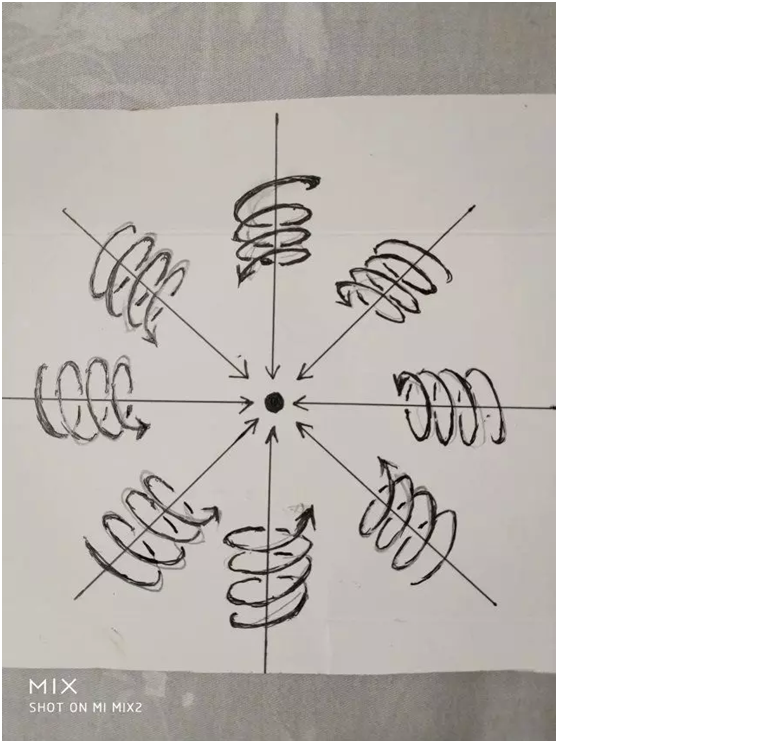
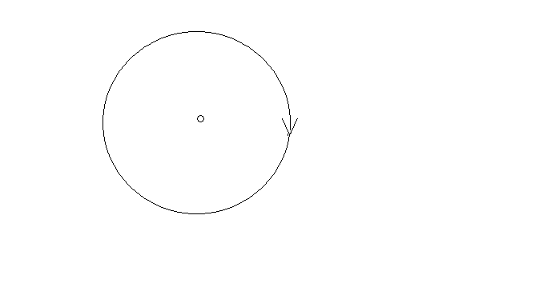
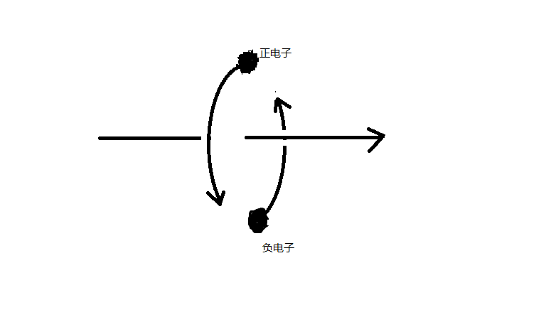

<!DOCTYPE html>
<html lang="zh-CN">
<head>
  <meta charset="UTF-8">
  <meta name="viewport" content="width=device-width, initial-scale=1.0">
  <link rel="stylesheet" href="styles.css">
  <link rel="stylesheet" href="stylesbook.css">
  <style>
p{
font-size: 18px;
margin-bottom: 20px;
line-height: 1.6;
animation: fadeIn 1s;
color: #c8c8c8;
background-color: #1b3e40;
text-align: left;
}
  </style>
  <title>页面标题 - 张祥前统一场论</title>
</head>
<body>
  <header>
    <div class="header-left">
      <a href="index.html" class="logo">张祥前统一场论</a>
      <nav>
        <ul class="nav-menu">
			<li>
			  <a href="theory.html">统一场论</a>
			  <ul class="dropdown">
				<li><a href="overview.html">统一场论正文（重要）</a></li>
				<li><a href="lorentz.html">用时间的物理定义解释光速不变</a></li>
				<li><a href="spacetime.html">证明空间的波动性</a></li>
				<li><a href="gravity.html">揭开万有引力的本质之谜</a></li>
				<li><a href="electromagnetism.html">揭开电荷、电磁场的本质之谜</a></li>
				<li><a href="light.html">揭秘光的本质</a></li>
				<li><a href="math.html">张祥前的数学理论</a></li>
				<li><a href="concise.html">张祥前统一场论简洁版</a></li>
			  </ul>
			</li>
			<li><a href="biography.html">张祥前生平自述</a></li>
			<li><a href="donation.html">捐款</a></li>
			<li><a href="works.html">更多作品</a></li>
			<li><a href="contact.html">联系张祥前</a></li>
        </ul>
      </nav>
    </div>.
        </ul>
      </nav>
    </div>
    <div class="header-right">
    </div>
  </header>

  <main class="main-content">
  <div class="hide-on-small">
    <div class="toc">
      <h2>目录</h2>
      <button id="toggle-toc">显示/隐藏目录</button>
      <ul class="table-of-contents" id="table-of-contents">
	<li><a href="#section-0">前言</a></li>
	<li><a href="#section-1">一，宇宙的构成和统一场论基本原理</a></li>
	<li><a href="#section-2">二，物质的定义</a></li>
	<li><a href="#section-3">三，物理世界存在的虚假性</a></li>
	<li><a href="#section-4">四，物理概念是怎么产生的</a></li>
	<li><a href="#section-5">五，基本物理概念和导出物理概念</a></li>
	<li><a href="#section-6">六，基本物理概念的分类</a></li>
	<li><a href="#section-7">七，如何描述空间本身的运动</a></li>
	<li><a href="#section-8">八，宇宙中物体和空间为什么要运动</a></li>
	<li><a href="#section-9">九，螺旋运动规律</a></li>
	<li><a href="#section-10">十，平行原理</a></li>
	<li><a href="#section-11">十一，几何对称性等价于物理守恒性</a></li>
	<li><a href="#section-12">十二，空间的连续和不连续</a></li>
	<li><a href="#section-13">十三，运动的描述不能够脱离观测者</a></li>
	<li><a href="#section-14">十四，空间为什么是三维的</a></li>
	<li><a href="#section-15">十五，空间可以无限存储信息</a></li>
	<li><a href="#section-16">十六，统一场论基本假设</a></li>
	<li><a href="#section-17">十七，时间的物理定义</a></li>
	<li><a href="#section-18">十八，时空同一化方程</a></li>
	<li><a href="#section-19">十九，三维圆柱状螺旋时空</a></li>
	<li><a href="#section-20">二十，  认识光速的本质</a></li>
	<li><a href="#section-21">二十一，解释洛伦茨变换中的光速不变</a></li>
	<li><a href="#section-22">二十二，推导出相对论的时空间隔不变性</a></li>
	<li><a href="#section-23">二十三，宇宙中4大场的笼统定义</a></li>
	<li><a href="#section-24">二十四，引力场和质量的定义方程</a></li>
	<li><a href="#section-25">二十五，统一场论动量公式</a></li>
	<li><a href="#section-26">二十六，统一场论动力学方程</a></li>
	<li><a href="#section-27">二十七，解释牛顿三大定理</a></li>
	<li><a href="#section-28">二十八，证明惯性质量等价于引力质量</a></li>
	<li><a href="#section-29">二十九，解释万有引力的本质</a></li>
	<li><a href="#section-30">三十，  电荷和电场的定义方程</a></li>
	<li><a href="#section-31">三十一，随时间变化的引力场产生电场</a></li>
	<li><a href="#section-32">三十二，磁场的定义方程</a></li>
	<li><a href="#section-33">三十三，核力场的定义方程</a></li>
	<li><a href="#section-34">三十四，统一场论能量方程</a></li>
	<li><a href="#section-35">三十五，随时间变化的磁场产生引力场</a></li>
	<li><a href="#section-36">三十六，光子模型</a></li>
	<li><a href="#section-37">三十七，统一场论的主要应用</a></li>
      </ul>
	</div>
	</div>
    <div class="content" style=" width: 100%;";>
      <h2>正文</h2>
      <p>
        <section id="section-0">
		<h3>前言</h3>
		<p>
&nbsp&nbsp统一场论最早是爱因斯坦提出的，他化了40多年时间，希望把电磁场和引力场统一起来，但没有成功。
人类目前发现了自然界有弱力、电磁场力、万有引力、核力4种不同形式的力，其中电场力和磁场力人类已经统一了，核力目前人类对此认识很不完善。弱力在主流科学家看来也被统一在电磁场力中。
本文认为电场力和磁场力不是同一种力，弱力是电磁场力和核力的合力，不是基本力。
本文论述的电场力、磁场力、万有引力、核力的统一，简单的讲，就是把电场力、磁场力、万有引力、核力写在一个数学公式，以及用数学公式写出电场、磁场、万有引力场【简称引力场】、核力场之间的关系。
由于统一场论涉及到了时间、空间、运动、力、光速、速度、质量、电荷、能量、动量-----这些物理学的本质问题，所以统一场论的完成对人类具有重大意义，但也具有极大的难度。
</br></br>
&nbsp&nbsp注意：
本文在没特别注明的情况下，大写字母为矢量。
本文只描述最简单、最基本的质点在真空中运动情况，不描述形状物体在介质中的运动情况。
文中出现的质点概念，是我们为了方便描述物体粒子的运动，不考虑物体粒子的形状和线长度，把物体理想化，看成一个点。如果要讨论质点的体积和几何长度在本文中是没有意义的，因为违反了我们的约定。
</br>&nbsp&nbsp统一场论把质点的一切性质归咎于质点在空间中的运动【或者质点周围空间本身的运动】，讨论质点内部情况是没有意义的。
统一场论主要是描述物体【或者说质点】周围空间本身的运动，因而统一场论也可以叫空间运动学。
统一场论的基本假设是物体周围空间光速发散运动，然后以这个假设为基础，展开了对牛顿力学、相对论、麦克斯韦方程的解释、修改、扩展、 深度认识。
统一场论的核心思想是——物理世界的存在是虚假的，一切物理现象只是人的描述而已！
要认真领会这个思想，否则无法理解统一场论。
文章的“垂直原理”是理解的难点，阅读要注意这一点。</p>
</br></br>
        <section id="section-1">
		<h3>一，宇宙的构成和统一场论基本原理</h3>
		<p>
&nbsp&nbsp宇宙是由物体和它周围空间构成的，不存在第三种与之并存的东西，一切物理现象都是我们观察者对物体在空间中运动和物体周围空间本身运动的一种描述。
如果没有我们观察者的描述，宇宙真实存在的只剩下物体和空间，其余统统不存在。
我们眼前看到的、感觉到的宇宙是虚假的，背后真实的宇宙——由物体和空间构成。
空间和物体不存在由一个更基本的东西构成，空间和物体是不能相互转化的,宇宙是二元的，不是一元的。
至于宇宙为什么是由物体和空间构成，物体和空间为什么不能够相互转化？
这些问题统一场论无法回答，统一场论只是认定了这个事实，并且以这个事实为理论基础，展开推理。
统一场论的主要任务是解释时间、位移、质量、电荷、引力场、电场、磁场、核力场、能量、光速、速度、动量、万有引力、电磁力、核力----这些基本物理概念的本质，以及它们之间的关系。</p>
		</br></br>
		<section id="section-2">
		<h3>二，物质的定义</h3>
		<p>&nbsp&nbsp不依赖我们观察者而客观存在的东西就是物质。 
宇宙中只有物体和空间不依赖观察者而真实、独立地存在着，所以，物质由物体和空间组成。除了物体和空间，其余都是人的描述而已，脱离我们观察者统统不存在。
像我们眼前的一棵树、一条河是“物”，树的生长、河水的流动是“事”。
宇宙中，物体和空间是“物”，其余的像时间、位移、质量、电荷、场、能量、光速、速度、动量、力、温度、声音----都是“事”，是“物”相对于我们观测者运动时，经我们人描述出的一种性质。
这个基本原理否定了能量、时间是物质的一部分，否定了场是一种特殊的物质。
场要么是物质粒子运动引起的效应，要么是空间运动引起的效应。统一场论认定场的本质就是运动变化的空间所引起的效应。
从这个基本原理出发，还可以推断暗物质、暗能量、上帝粒子、引力子、以太、弦论中的弦、膜----统统不存在，都是人们杜撰的。
宇宙空间是无限的，宇宙中的物体也是无限的。时间只是人对空间运动产生一种感觉的描述，时间是观察者描述出来的一个物理量。
只要有观察者存在，空间存在，宇宙的时间就一直存在着，宇宙没有开始也没有结束。
宇宙的空间、年龄都是无穷大的，宇宙大爆炸理论是错误的，但宇宙局部地区有大爆炸的可能。</p>
		</br></br>
		<section id="section-3">
		<h3>三，物理世界存在的虚假性</h3>
		<p>&nbsp&nbsp物理是我们观察者对几何世界【由物体和空间构成】的感知，再经过大脑的描述而诞生的。
物理世界的存在是虚假的，是我们观察者描述出来的，脱离我们观察者物理世界是不存在的，真实存在的是背后的几何世界。
几何世界是客观、真实地存在着。</p>
		</br></br>
		<section id="section-4">
		<h3>四，物理概念是怎么产生的</h3>
		<p>&nbsp&nbsp讨论物体和空间是怎么产生的的问题是没有意义的，因为物体和空间是构成宇宙大厦最基本的东西。物体和空间本来就存在着，就像宇宙本来就存在的道理是一样的，讨论宇宙是怎么产生的、宇宙的起源问题也是没有意义的。
我们不能用一个更基本的东西去定义物体和空间，因为没有比物体和空间更基本的东西。但是，我们可以用物体和空间去定义其他物理概念。
除物体和空间外，其余一切物理概念，像时间、场、质量、电荷、光速、力、动量、能量-----都是物体在空间中运动，或者物体周围空间本身的运动，相对于我们观测者所表现出的一种性质，都是运动形成的，因而与位移有关。
可以认为时间、场、质量、电荷、光速、力、动量、能量-----都是空间位移的函数，我们都可以用空间位移来表示。
在物理概念中，像声音、颜色、力、温度这些物理概念是物体在空间中运动触及到我们观测者，引起了我们观察者的感觉，我们观测者对这些感觉加以分析、概括而形成的。
但是，时间和场有点特殊，时间是我们观测者自己的身体在空间中运动引起了我们的感觉，场是空间本身的运动形成的效应。</p>
		</br></br>
		<section id="section-5">
		<h3>五，基本物理概念和导出物理概念</h3>
		<p>&nbsp&nbsp物理概念中有的是基本的，有些物理概念是这些基本概念导出的。比如时间和位移是基本的，速度是由时间和位移所导出的。
还有没有比位移和时间更基本的物理概念？
由于宇宙由物体和空间这两个东西组成的，所以物体和空间是最基本的物理概念，是构成宇宙大厦的基本砖瓦，不能定义，而别的物理概念都可以用物体和空间来定义。
下面是表示这些物理概念从高级、基本的到低级的示意图。
物体【或者是质点】、空间→时间、位移、场→速度、光速→质量、电荷→动量→力→能量、功→温度、光、声音、颜色等等。</p>
				</br></br>
				<section id="section-6">
		<h3>六，基本物理概念的分类</h3>
		<p>&nbsp&nbsp基本物理量分两大类，一类是标量，一类是矢量，其中标量就是可以用数字表示，而矢量可以用数字加方向表示。
标量可以分为正负标量和没有正负之分的纯粹正标量。比如正电荷就是正标量，负电荷就是负标量。</p>
				</br></br>
				<section id="section-7">
		<h3>七，如何描述空间本身的运动</h3>
		<p>&nbsp&nbsp统一场论认为空间本身时刻在运动着，现代物理学都是描述物体在空间中运动，那我们如何定性定量的描述空间本身的运动？
我们把空间分割成许多小块，每一小块称之为空间几何点，简称几何点，或者叫空间点。空间点运动所走过的路线叫空间线。描述这些空间点的运动，就可以描述出空间本身的运动。
流体力学和波动方程的数学方法同样适用于描述空间本身的运动，实际上我们是把空间看成是类似流体的一种特殊介质。 
而统一场论也认定了空间是客观存在的，空间的存在不依赖于我们人的感觉，如果没有人，空间照样存在，但是，没有人的话，时间是不存在的。</p>
				</br></br>
				<section id="section-8">
		<h3>八，宇宙中物体和空间为什么要运动</h3>
		<p>&nbsp&nbsp物理学是我们对几何世界【由物体和空间构成】的描述，所以，任意一个物理现象，我们总可以找到相对应的一个几何状态。
在物理学中我们描述的运动状态，和几何中的垂直状态是相对应的。如果没有我们人去描述，运动状态其实就是几何中的垂直状态。
注意，这里一部分是推理，因为运动状态总有一个几何状态相对应，至于是几何上什么状态，对应着运动状态，这个就需要假设。
统一场论中用垂直原理解释物体和空间为什么要运动，垂直原理表述如下：
</br></br>&nbsp&nbsp相对于我们观察者，宇宙中任何一个物体，在其周围空间中任意一个空间点上，最多可以作三条相互垂直的直线，这个叫空间的三维垂直状态。
处在这个垂直状态中的任意一个空间点，相对于我们观测者一定要运动，并且不断变化的运动方向和走过的轨迹又可以重新构成一个垂直状态。
以上可以叫垂直原理的定性描述，以后，我们还要求证垂直原理的定量描述。
方向不断变化的运动一定是曲线运动，圆周运动最多可以作两条相互垂直的切线。
</br></br>&nbsp&nbsp而空间是三维的，沿其运动轨迹上的任意一点，一定可以作三条相互垂直的切线，所以一定会在圆周运动平面的垂直方向上再延伸运动。
合理的看法是空间点以圆柱状螺旋式【就是旋转运动和旋转平面垂直方向直线运动的合成】在运动。
物体存在于空间中，物体所在的位置会因为空间本身运动的影响而运动。这个就是对宇宙中所有的物体为什么要运动的原因的解释
我们认为物体运动的原因是因为受力，只是一种很肤浅的认识，一切物体的运动背后原因，都是空间本身的运动造成的。反过来，我们可以又用空间运动来解释力的本质。
物体可以影响周围的空间，进而影响空间中存在的物体，这样物体就可以通过空间来相作用，不需要什么特殊的介质来传递相互作用力。
我们要认识到，物体周围空间的运动，是物体引起的，物体存在于空间中，可以对周围空间产生影响，这种影响的程度可以用周围空间的运动程度来衡量。
物体存在于空间中，对周围空间造成影响，令周围空间产生运动，空间的运动势必影响存在于空间中的物体的位置，令这个物体位置发生运动变化，或者具有运动变化的趋势。
物体之间的一切相互作用，万有引力、电场力、磁场力、核力本质上都是通过空间本身运动来进行的，物体通过运动变化的空间来相互传递作用力。
</br></br>&nbsp&nbsp空间不依赖我们观察者而客观存在着。我们也可以把空间看成是一种特殊的介质，物体和空间是紧密的联系在一起。
我们要注意，对空间运动的描述和我们描述普通物体的运动有相同的地方，也有不同的地方。
统一场论所描述的空间运动都是指物体周围的空间，如果没有物体，单纯的描述空间的运动是没有意义的。
因为描述运动需要确定时间开始时刻和空间位置的初始状态，单纯的空间没有时间开始时刻和空间位置的初始状态。
确定时间开始时刻和空间位置的初始状态需要依靠物体和我们观察者共同来确定。
空间本身的运动起源于物体，结束于物体，没有物体或者没有观察者，描述单纯的空间的运动是没有意义的。
垂直原理和螺旋运动密切相关，数学中的矢量叉乘，与垂直原理也有关，但是，论证太复杂，这里省略。</p>
				</br></br>
				<section id="section-9">
		<h3>九，螺旋运动规律</h3>
		<p>&nbsp&nbsp宇宙中的一切，小到电子、光子、质子，大到地球、月球、太阳、银河系----所有的自由存在于空间中的质点无一例外都是以螺旋式在运动，包括空间本身也是以圆柱状螺旋式在运动。
螺旋运动规律是宇宙核心规律之一，宇宙的一切看起来是周而复始的在运动，但不是封闭的。
数学中的矢量叉乘，与螺旋规律有关，但是，论证太复杂，这里省略。</p>
				</br></br>
				<section id="section-10">
		<h3>十，平行原理</h3>
		<p>&nbsp&nbsp物理学中描述的平行状态对应数学中的正比性质。
两个物理量，如果可以用线段来表示，相互平行的话，一定成正比关系。
数学中的矢量点乘，与这个密切相关。</p>
				</br></br>
				<section id="section-11">
		<h3>十一，几何对称性等价于物理守恒性</h3>
		<p>&nbsp&nbsp物理学中描述的守恒性等价于几何中的对称性。
一个守恒物理量，如果能够用线段来表示，在几何坐标上是线对称的，如果可以用面积来表示，在几何坐标上是平面对称的，如果可以用体积来表示，在几何坐标上是立体对称的。</p>
				</br></br>
				<section id="section-12">
		<h3>十二，空间的连续和不连续</h3>
		<p>&nbsp&nbsp我们人类接触到的空间，对空间的认识，都认为空间是连续的。我们人类处理空间的数学体系，很多都默认空间是连续的。
但是，在某些情况下，空间可以表现为不连续。比如，物体以光速相对于我们观察者运动，沿运动方向的空间长度缩短为零，物体所在的空间相对于我们观察者可以表现为不连续。这个是量子力学中量子纠缠产生的根本原因。
这个与相对论、量子力学有关，但是，这是另外一个广阔的研究领域，要人类许多年、许多人努力才可以搞清楚的，这里不再详细论述。</p>
				</br></br>
				<section id="section-13">
		<h3>十三，运动的描述不能够脱离观测者</h3>
		<p>&nbsp&nbsp相对论认为时间、位移、电场、磁场、力、质量等很多物理概念是相对的。对于相对运动的不同观测者来测量，可能有不同的数值，这“相对”两个字延伸一下，就是相对于观测者而言。
由于时间、位移、速度、力、质量、能量-----这些物理概念来自于物体【相对于我们观测者】的运动或者物体周围空间的运动。
所以讲，脱离我们观测者、或者不指明那一个观测者，描述运动是没有意义的，时间、位移、速度、力、质量、能量-----许多物理概念就失去了意义。
咋一看，以上看法好像是一种唯心主义，不过，唯心主义认为一旦没有观测者，没有人，一切都没有了，这个也是不对的。
正确的看法应该是这样的：
</br></br>宇宙中所有的运动都是相对于我们人而言的，一旦没有了人，宇宙的景象就像照相机照相的一个定格镜头，而不是不存在。
物理学中的运动状态从几何的角度看就是垂直状态，两个现象，其是同一个现象，是我们观测者从不同的角度【就是从物理角度和从几何角度】看，而出现了不同的结果。
运动状态就是我们人对物体在空间中的位置不断肯定、否定、肯定、否定、肯定、否定······的结果.
有人认为，在没有人类之前的宇宙一切照样在运动，所以运动的存在与人是没有关系的。
其实“没有人类之前”这句话是一个病句，没有了人类，哪来的没有人类之前。
“没有人”三个字，就表示已经把人排除了，你既然已经排除了人，就不能再用人来定义之前或者之后。
之前或者之后都是依靠人来定义的，没有我们人哪来的前后，上下左右，东西南北？
注意，物理学中描述的运动，空间、物体【或者叫质点】、观测者三个东西一个都不能少，否则，运动就失去了意义。
描述时间的变化有点特殊，观测者和物体实际是一个东西。
人类对运动的认识有一个发展的过程，牛顿力学认为描述一个物体的运动，必须要找一个认为是静止的参照性物体，作为参照物，运动的描述强调了在某一段时间里物体在空间中走过的路程。
牛顿力学认为时间和空间长度的测量于观测者的运动没有关系。
</br></br>&nbsp&nbsp相对论继承了牛顿力学基本看法，但是相对论强调了不同的观测者，测量的空间、时间等其他物理量的数值可能是不同的。
相对论认为时间和空间长度的测量与观测者的运动速度有关系。低速时候，关系不明显，接近光速时候，特别明显。
统一场论认为描述运动必须要相对于一个确定的观测者，没有观测者、或者不指明那一个观测者，描述运动是没有意义的。
物理上的运动状态是我们人描述的，静止状态也是我们人描述的，如果没有我们人这个观察者，就不存在运动状态，也没有静止状态，宇宙只是剩下了物体和空间。
没有观测者、或者不指明那一个观测者，物体和空间是处于运动状态，还是静止状态，是不能确定的，讨论运动或者静止是没有意义的。
选择一个参照物描述运动有时候是不可靠的。
统一场论认为时间是观测者自己在空间中运动形成的，肯定与观察者的运动相关，也就是说，时间的测量与观察者有关，同一个事情所经历的时间，相互运动不同的观察者可能有不同的结果。
由于空间本身时刻在运动，因而空间位移与观测者的运动也有关，不同的观测者可能有不同的结果。
统一场论和相对论一样，强调了你的时间和空间，我的时间和空间，你我在相互运动的情况下，是不同的，不能混淆的。</p>
				</br></br>
				<section id="section-14">
		<h3>十四，空间为什么是三维的</h3>
		<p>&nbsp&nbsp我们知道，沿空间中任意一点最多可以作三条相互垂直的有向直线，称为三维空间。为什么恰巧是三条，不是二条，也不是四条？
一维空间决定了质点以直线运动，二维空间决定了质点以圆周或者曲线运动，三维空间决定了质点沿一个平面旋转运动，并且又在旋转平面垂直方向直线运动【就是以圆柱状螺旋式运动】。
或者说空间直线运动产生的是一维空间，空间曲线运动产生的是二维空间，空间圆柱状螺旋式运动产生的是三维空间。
这两钟看法是我们人对同一个现象从不同角度理解而出现的。
简单的说，空间三维的原因是空间时刻以圆柱状螺旋式运动造成的。
&nbsp&nbsp由于空间的三个方向是平权的，没有哪一个方向是特殊的，空间运动的时候，在三个方向上都要运动，加上运动的连续性，造成了空间只能以圆柱状螺旋式运动。
我们所生活的空间是右手螺旋空间，也就是右手大拇指指向空间的直线运动方向，右手四指头环绕方向就是空间的环绕运动方向。
至于宇宙中有没有左手螺旋空间，从逻辑上分析是没有的，假设存在了左手螺旋空间，会受到普遍的右手螺旋式空间的排斥，亿万年后，会被排斥到宇宙无穷远处，就是有，我们也是无法发现。
两个右手螺旋式空间【正面对我们观察者都是逆时针旋转】相互碰撞，旋转相互接触地方空间会减少，表现为相互吸引，而左手螺旋空间和右手螺旋空间相遇，会相互排斥【详细的参阅后面的解释万有引力的本质】。

在后面，我们还指出了正电荷和负电荷周围空间都是右手螺旋。
但是，这个问题仍然有待理论和实践去探讨。不排除人类未来可以人为的制造左手螺旋空间。</p>
				</br></br>
				<section id="section-15">
		<h3>十五，空间可以无限存储信息</h3>
		<p>&nbsp&nbsp信息的定义：信息是物质【由物体和空间组成】的运动形式。
信息的量可以用可能性来表示，可能性多，就表示信息量大。
把我们认识的对象分为“事”和“物”，信息属于事。
宇宙中任何物体粒子储存或者携带的信息量总是有限的。
宇宙中任意一处空间可以储存整个宇宙以前的、现在的、未来的所有信息。换句话，任意一块空间可以无限存储信息。
或者说：宇宙任意一处有限空间区域里，都可以存储无穷多的信息。
背后的原因为：空间是无限连续的，无限可分的。
还可以用逻辑证明：
物体周围空间以光速向四周发散运动，可以把这个物体的一切信息带到周围空间里。
由于光速运动的三维空间，沿运动方向的空间因为光速运动导致长度缩短为零，变成了二维空间。
所以，光速运动空间可以把物体所有的信息刹那间带到宇宙任意一处空间里，而不是大家所想的那样是以光速一步一步的传播。
宇宙只有二维空间和三维空间，不存在一维空间和四维及四维以上的空间。
物体的一切信息实际存储在二维空间里。由于二维空间是零体积，可以和宇宙任意一处三维空间保持着零距离，所以，二维空间中存储的信息，可以弥漫在宇宙任意一处三维空间里。
反过来，我们也可以说，宇宙任意一处三维空间隐含了整个宇宙以前的、现在的、未来的所有信息。
</br></br>&nbsp&nbsp为什么也包含了未来的信息？
因为时间是我们观察者的感觉，如果没有我们观察者，不存在时间，宇宙中亿万年前和亿万年后，所有的信息都可以重叠在空间的一个点上。
宇宙除了时间、空间的无限性，还有包含的信息的无限性。
宇宙包含信息的无限性，可以用另外一句话描述：
宇宙包含了无限的可能性，宇宙的反复演化，要把一切的可能性给表现出来，而且是反复、无限次的给表现出来。
三维立体空间中发生的信息，可以保存在二维曲面空间中，严格的证明，可以用场论中的高斯定理。
二维曲面空间中发生的信息，可以保存在一维线性空间中，严格的证明，可以用场论中的斯托克斯定理。
</br>&nbsp&nbsp我们需要注意：
信息的产生，需要物体粒子参与，单纯的空间，不能够制造信息。
信息需要观察者的描述，没有观察者，信息不存在。</p>
				</br></br>
				<section id="section-16">
		<h3>十六，统一场论基本假设</h3>
		<p>&nbsp&nbsp宇宙中任何物体【包括我们观察者的身体】相对于我们观察者静止时候，周围空间都以物体为中心、以圆柱状螺旋式【旋转运动和旋转平面垂直方向匀速直线运动的合成】、以矢量光速度C【统一场论认为光速可以为矢量，用大写字母C（数量或模、或标量为c ，c不变）表示，矢量光速C的方向可以变化】向四周发散式运动。
		
		</br>&nbsp&nbsp上图的物体周围空间运动以圆柱状螺旋式向四周发散。

在物体相对于我们观察者静止的情况下，旋转运动相互抵消为零【不能等同于没有旋转运动，后面有详细的论证】，这种情况下，我们在分析、计算的时候，只要考虑直线发散运动。
		
</br>&nbsp&nbsp以上我们说宇宙大爆炸理论是错误的，宇宙没有开始，没有结束，宇宙本来就存在着。现代的宇宙大爆炸理论强力证据是——空间相对于任意一个观察者在膨胀是怎么一回事？
空间膨胀的真正原因是宇宙中任意一个观察者，周围空间都以光速、以圆柱状螺旋式向发散运动，空间中存在的星球也离开我们观察者运动。
那月球、太阳为什么没有以光速远离我们观察者运动？这里还有一个制约因素，就是与物体、星球一开始的最初运动状态有关。
比如地球，一开始就和我们观察者保持静止状态，月球一开始和我们保持接近于静止状态【和光速比起来】。只有非常遥远的星球，与我们观察者关系不大，远离我们的速度就很快。

		</p>
				</br></br>
				<section id="section-17">
		<h3>十七，时间的物理定义</h3>
		<p>&nbsp&nbsp前面指出，一切物理概念都是物体在空间中或者物体周围空间本身相对于我们观察者运动，经过我们观察者的描述而形成的。
很多物理概念首先来自于物体在空间中运动给我们人的一种感觉。
时间也可以认为某某物体在空间中运动或者周围空间运动给我们人的一种感觉。
那到底是什么东西在运动给了我们人具有时间的感觉？
我们把一个人用宇宙飞船送到几百亿亿亿光年远的一个空间区域里，把这个人丢下来后，飞船立即飞回来。
这个空间区域里别的星球离得都非常非常的遥远，可以设想，这个人仍然有时间的感觉。
是什么物体运动使这个人有了时间的感觉？这个情况下，仅有这个人的身体而已。
</br></br>&nbsp&nbsp正确合理的看法是：
时间是我们观测者对自己身体在空间中运动的一种感受。
结合以上的统一场论基本假设——宇宙中一切物体，周围空间都以光速发散运动，我们可以给出时间的物理定义：
宇宙中任何物体【包括我们观察者的身体】周围空间都以物体为中心、以矢量光速度C向四周发散运动，空间这种运动给我们观察者的感觉就是时间。
有人认为，在没有人类之前的宇宙照样有时间，所以，认为时间是人的感觉的观点是错误的。
其实“在没有人类之前”这句话是一个病句，没有了人，哪来的没有人类之前？
这个逻辑错误在：你第一步“在没有人”4个字中，已经排除了人，第二步又用人来定义“之前”，你既然已经把人排除了，就不能够再用人来定义。
没有我们人哪来的前后、先后、上下左右、东西南北？
“时间”恰恰是人对自己身体周围空间的运动给人的感觉的描述，而诞生出来的一个物理概念。</p>
				</br></br>
				<section id="section-18">
		<h3>十八，时空同一化方程</h3>
		<p>&nbsp&nbsp 以上的时间物理定义，同时又定义了光速。在统一场论中，时间、空间、光速三者是捆绑在一起的，光速反映了时空同一性，即时间的本质就是我们对光速运动空间描述出来的。
我们把光速扩展到矢量，矢量光速C【模为c】方向可以随时间t、光源速度、观察者运动速度而变化。
C = 标量光速c乘以单位矢量N。
标量光速c不随时间t、不随观察者运动速度、光源运动速度而变化。
由以上的时间的物理定义，可以认为：
时间与观测者周围空间以光速移动的路程成正比。
借助空间点的概念，可以认为：
时间是我们观测者周围许多空间点以观察者为中心、以矢量光速C向四周发散运动给我们人的感觉。
一个空间点p，在零时刻从我们观察者所在的地方，以矢量光速C，经历的时间t，与移动的路程R成正比。
由此得出时空同一化方程：
</br>&nbsp&nbspR(t) = Ct = xi+ yj + zk
</br>&nbsp&nbspi,j,k分别是沿x轴、y轴、z轴的单位矢量。标量形式为：
</br>&nbsp&nbsp r² = c²t²= x² + y² + z² </br>&nbsp&nbsp 
这两个方程可以认为是时空同一化方程,对应于相对论时空相对性方程，反映了空间和时间是同一个起源，也可以说，时间可以用空间位移来表示。
我们所要注意的是，不光是时间，像质量、电荷、场、动量、力、能量---这些基本物理概念，以及一切物理概念，都是空间位移造成的，都是由空间位移组成的，追溯这些物理概念的本质，我们会发现最终都可以还原、分解为空间位移。
这也是物理学的本质——物理学只是描述运动的一门学科。</p>
				</br></br>
				<section id="section-19">
		<h3>十九，三维圆柱状螺旋时空</h3>
		<p>&nbsp&nbsp以上提到：宇宙中所有的物体【或者叫质点】包括空间本身都是以螺旋式在运动，螺旋运动规律是自然界最基本的规律之一。
统一场论认为空间本身也是以圆柱状螺旋式在运动。
下面我们来建立统一场论中的三维圆柱状螺旋时空方程，来替代相对论中四维时空方程。
设想在某处空间区域里存在着一个质点o点，相对于我们观测者静止，我们以o点为原点，建立一个三维笛卡尔直角坐标系x,y,z。
o点周围空间中任意一个空间点p在时刻t'= 0，从o点出发，经过一段时间t后，在t”时刻到达p点所在的位置x,y,z 。
也就是p点在t”时刻的空间位置坐标为x，y，z，由o点指向p点的空间位移失径【简称位矢】我们用R表示。
按照以上的垂直原理，R随着空间位置x,y,z和时间t变化而变化，所以有：
</br>&nbsp&nbsp R(t) =(x,y,z,t) </br>&nbsp&nbsp
给出了R(t) 和(x,y,z,t)的具体关系，是以上的时空同一化方程：
</br>&nbsp&nbsp R(t) = Ct = x i+ y j + z k 
</br>&nbsp&nbsp 标量形式：r² = c²t² = x²+ y²+ z² </br>
r是矢量R的数量。
以上方程在相对论中也出现过，相对论中被认为是四维时空距离，真实情况是时间的本质就是我们对光速运动的空间的描述。三维空间中任意一维以光速运动，我们就可以认为是时间。
空间的存在是基本的，时间不是基本的，没有人这个观察者，时间是不存在的，但是仍然存在着空间。
由于时间是我们观察者对光速运动空间的描述，时间的量等价于光速运动的空间位移量。
相对论显然没有认识到这一点，相对论不知道时间的本质，把时间看成和空间平权的另外一维，和三维空间并列为四维时空。
相对论没有认识到空间是基本的、真实存在的，时间是人描述出来的，存在是虚假的，这个明显是相对论的缺陷。
统一场论认为p点真实走过的轨迹是圆柱状螺旋式。只是在o点相对于我们观测者静止情况下，周围空间的运动是均匀的，许多类似p点的空间点旋转运动累加起来，由于相互抵消而为零。如下图所示：

这个如同稳定磁场的散度为零，可以用场论高斯定理严格证明。
但是，如果我们只考虑一个单一空间点p点的运动，其螺旋式应该在方程中体现出来.
如果p点在x、y平面上以角速度ω旋转运动，在z轴上以匀速度h直线运动，R在x、y平面上投影长度为r，则有:
</br>&nbsp&nbsp  x = r cosωt 
</br>&nbsp&nbsp y = r sinωt 
</br>&nbsp&nbsp z =  h t 
以上也可以用以下矢量方程表示，
</br>&nbsp&nbsp R = Ct = r cosωt i+ r sinωt j + h t k </br>
以上可以叫三维螺旋时空方程。
统一场论认为，宇宙的一切奥妙都是以上方程决定的，大到银河系、星球，小到电子、质子、中子的运动，以及物体为什么有质量、为什么有电荷，一直到人的思维等等······，都与这个方程有关。
三维螺旋时空方程中，旋转运动和直线运动有什么关系呢？
沿坐标x,y轴方向的空间旋转位移矢量X, Y和沿坐标z轴方向的空间直线位移矢量Z应该满足以下叉乘关系：
</br>&nbsp&nbsp X×Y = Z 
</br>&nbsp&nbsp Y×X = - Z  </br>
上式X,Y是旋转量，如果X×Y = Z表示右手螺旋关系，则Y×X = - Z则表示左手螺旋关系。
式X×Y = Z和Y×X= - Z反映了空间的旋转运动和直线运动之间的联系。
这个两个公式来源于前面的“平行原理”和“垂直原理”， “平行原理”指出，两个物理量如果可以用线段表示的，相互平行的话，一定是正比关系。
“垂直原理”指出了平面或者曲面的方向在其垂直方向上。而圆周运动的方向在圆周平面垂直方向上，背后的原因也是“垂直原理”。
在式X×Y = Z中，可以把X×Y看成一个矢量面积，面积的大小等于X×Y的数量，方向和X、Y相互垂直，和Z相平行，按照平行原理，矢量面积X×Y和Z成正比，当然，在某种情况下，也可以令比例常数为1，写成X×Y = Z 。
对于以上的三维螺旋时空方程，我们需要注意以下几点：
</br></br>1，o点周围有许多个空间点，p点只是其中一个。
2，式</br>&nbsp&nbsp R = r cosωti+ r sinωtj + h tk中，当r = 0时候，R= Ct = ct k，</br>&nbsp&nbsp 不表示o点周围只有一条R = ct k这样的矢量，而是有许多条类似这样的矢量呈辐射式均匀的分布在o点周围。
坐标轴只是我们描述空间的一种数学工具，不会影响运动空间的分布。
3，空间的圆柱状螺旋式运动是直线运动和旋转运动两种运动形式的叠加。也可以认为直线运动是以上提到的圆柱状螺旋式运动中r = 0的一种特例。
我们还要意识到，o点周围有多少空间点以光速直线发散式离开o点运动，就有多少空间点围绕o点旋转运动，正常情况下空间点的运动应该是连续的，不会无缘无故的中断。
场的本质就是空间以圆柱状螺旋式运动的效应，在场论中，散度描述了空间的圆柱状螺旋式的直线运动那部分，旋度描述了旋转运动那部分。
4，由于一个空间点和另外一个空间点绝对的没有区别，许多空间点沿一条直线相继的旋转运动，可以认为空间产生了波动形式，波动的速度就是光速。而且空间波动的传播方向和旋转平面相垂直，很显然空间波动是横波。
我们知道，圆柱状螺旋式运动和波动(这里指横波)有很大的区别，但是，对于空间这种特殊的物质形式，两种运动形式却可以相互并存，因为两个空间点之间绝对的没有区别。
后面，我们将详细的讨论空间的波动性。</p>
				</br></br>
				<section id="section-20">
		<h3>二十，  认识光速的本质</h3>
		<p>&nbsp&nbsp 1，光速的本质</br>
物理学的深入发展，光速概念的重要性越来越受到人们的重视，光速与时间、空间、场、质量、电荷、动量、力、能量······这些基本物理概念变得同等重要。
人们一提到光速不由自主的就想到了发光，实际上光速比发光现象更能够反映自然界的本质规律。
统一场论中，认定光速反映了时空同一性，即空间是基本的，空间的运动形成了时间，时间就是我们观察者对空间以光速运动的描述。
时间和空间是同一个本源，是光速把二者联系起来。
认定光速是一个常量，空间和时间本来是同一个东西，意味着空间延长、时间相应的延长，空间缩短时间相应缩短，这就是时空同一性。
以上的方程R(t)= Ct = x i+ y j + z k就是时空同一化方程。
原子中的电子生活在小空间范围内，运动速度极快，运动周期极短。而太阳系内，行星在大范围空间里运动，速度小，周期长，这一切的背后都是时空同一性的原因。
统一场论的时空同一性和相对论的时空相对性表面上看有矛盾的，但本质是一致的，时空同一性方程是基本的，从时空同一性可以导出相对论的时空相对性方程，稍后我们将给出推导过程。

</br></br>&nbsp&nbsp 2，解释与光速相关的相对论效应</br>
我们首先来谈谈光速为什么是宇宙中最高速度的问题。
相对论中认为，光速是宇宙中最高的速度。相对论主要是根据数学公式做出的判断，因为物体的运动速度如果超过光速，物理量将出现虚数而失去意义。其实从逻辑上推理光速是宇宙最高速度也很简单。
设想，设想一架外星人的飞船长10米，以光速相对于我们运动，我们发现飞船的长度缩短为零，飞船内部时间凝固不走了，飞船内部的一切运动经历的时间都是零，在我们看来都是静止的。
如果飞船超光速相对于我们运动，按照变化的趋势分析，难道会出现飞船比长度为零还要短的情况？出现比时间凝固不走了还慢的情况出现？还要出现比静止更慢的运动？——显然没有。
相对论认为，一个飞船相对于我们运动，沿运动方向的空间长度缩短，飞船内部发生的任何事情，经历的时间变慢。当达到光速，飞船长度缩短为零，内部时间凝固了，不走了。
这个就是相对论著名的尺缩、种慢。
一个物体长度为零，体积也为零，体积为零，按理是不存在的，相对论这个结论让很多人不能够接受。
有人认为，这个是一种观察者效应，原因是观察者的观察造成的。
尺缩钟慢到底是真实发生了，还只是观察者效应？相比较，认为是观察者效应的人占大多数。
</br></br>&nbsp&nbsp 很多人认为：
尺缩种慢效应是相对于飞船外面观察者而言的，飞船实际尺寸没有改变。一个物体以接近光速运动时本身不会发生形变，但是它反射的光和电磁波发生了改变，在我们观察者看起来，就是这个物体发生了形变。
简单说吧，钟没有慢，尺不会缩，一切都只是你的观察而已。
但是，也有人认为：尺缩、种慢，并非你观测才发生，未观测就不尺缩了、不种慢了。只要有相对运动速度存在，尺缩钟慢就已经发生了。
有人采取折中方案，说：“尺缩效应”是观测效应，“钟慢效应”是实际效应。
统一场论认为尺缩和钟慢是捆绑在一起的，不存在一个是观察者效应，一个是真实效应。
统一场论认为尺缩、钟慢，既是真实的效应，又是观察者效应。
在统一场论中，真实效应和观察者效应没有绝对的区别，二者是统一的。
</br></br>&nbsp&nbsp 首先，你不能把观察者效应和真实效应完全对立起来，二者没有本质的区别。
你看到的宇宙为什么恰巧是那个样子——因为这个是你大脑描述出来的，真实的宇宙只是存在了物体和空间，其余统统都是你的大脑的描述、加工而已。
在统一场论中，空间是运动形成的，空间是从物体里面出来的，从正电荷出来，以光速向周围空间发散运动，又以光速向负电荷收敛。
空间运动需要人的描述，你看到的空间不是静止的，而是以光速在运动，这种运动是相对于我们观察者才具有确定的意义。
不把空间和观察者联系起来，谈论空间的运动是没有意义的。
空间的存在状态也就是运动状态，空间的三维垂直状态就是因为空间时刻以圆柱状螺旋式运动造成的。   
空间的运动状态，就是我们人对空间三维垂直状态描述的结果，几何上的空间三维垂直状态和物理上的运动状态是等价的。
你看到的空间为什么是那个样子，正是你描述出来的那个样子。
你看到的红色，为什么是红色，因为那就是你的描述。
如果没有我们人的描述，宇宙不存在红色。
</br></br>&nbsp&nbsp你看到的一切景象，天空的湛蓝，花草的艳丽，都是大脑对获得的电磁波信号经过加工分析后的结果。之所以是那个样子，正是你大脑告诉你的。
你感觉到的热是什么，热是你大脑描述出来的，没有你大脑的描述，不存在热，热的本质是人对分子无规则运动程度的描述。
你感觉到的声音，也是来自于你的描述，有声音和没有声音的区别是空间中分子位置不一样。声音其实不是一个真实东西，没有人的描述，声音其实是不存在的。
很多人将真实效应和观察者效应对立来看的——这个是普通人的思维。
但是，统一场论的核心思想就是物理世界的存在是虚假的，宇宙除了存在物体和空间这个情况不是我们人描述出来，其余一切物理现象，都只是我们人的描述而已。
在统一场论中，观察者效应和真实效应，没有绝对的区别，
我们说颜色、声音、热、都是人对自己感觉的描述，都是观察者效应，不是真实存在的东西，有人现在马马虎虎的能够理解。
但是，一旦说到运动状态也是人描述出来的【我们需要注意的是：静止状态也是我们描述出来的，没有我们观察者，宇宙中不存在运动状态，也不存在静止状态】，很多人的思维就不能适应了。
除了一种情况不是观察者效应【就是存在了物体和空间】，宇宙中的其余的一切都是观察者效应，都是我们观察者的描述出来的，包括运动状态和静止状态。
为什么物体和空间的存在不是观察者效应？
因为宇宙真实存在的是物体和空间，其余都是我们对物体运动和空间运动的描述，其余都是观察者效应。
物体和空间的存在是宇宙一切现象能够出现的基础。
宇宙一切都是人的描述，包括运动，静止，时间，质量，电荷，能量，力·····
</br></br>&nbsp&nbsp 有人会问：
有些观察者效应和真实发生是一致的，有些观察者效应与真实发生的是不一致的，怎么区分这两种情况？
——不存在不一致的情况。
你看到的，就是真实发生的，真实发生的，就必须要有一个观察者去描述，没有观察者去描述的所谓真实的情况，谈论是没有意义的。
宇宙每时每刻都发生很多事情，我们在讨论这些事情的时候，总是要和某一个观察者联系起来，简单的说，就是相对于某某怎么样怎么样。
你不说是相对于某某，忽略了是相对于哪一个观察者，往往得出似是而非、模棱两可的结果。
这个是相对论经常被人质疑、诟病的地方，只能说相对论是一个不彻底的理论，彻底的理论应该是统一场论。
按照统一场论，宇宙存在物体和空间，与我们观察者无关，这个是客观的，其余都是人的描述，其余都是主观的，都属于观察者效应。
</br></br>&nbsp&nbsp 在统一场论中，尺缩钟慢效应可以得到具体的应用。
统一场论认为，当物体以光速运动的时候，沿运动方向长度缩短为零，就不占用我们的空间，零体积的物体，就有可能穿墙而过，并且墙和物体都完好无损。
在具体应用中，统一场论认为物体具有质量和电荷是因为物体周围空间以光速发散运动，发散的条数和物体的质量成正比。
当用变化的电磁场产生反引力场，对物体照射，可以减少物体的质量，当物体周围空间光速运动的条数减少到零，就会突然以光速相对于我们运动起来【这个就是外星人光速飞碟飞行原理】。
当质量接近于零，虽然不会以光速运动，但是，处于准激发状态，可以穿墙而过，并且，对墙和物体丝毫没有损伤。
如果尺缩钟慢是纯粹的观察者效应，以上统一场论预言的刚体穿墙而过，并且二者都完好无损，显然是不可能的。
相对论认为，一个物体以光速运动，物体上所发生的一切事情经历的时间凝固了，不走了，这个我们难以接受。
统一场论认为时间是观察者周围空间光速发散运动形成的，当你以光速运动的时候，你已经追上空间的光速运动，你已经追上了时间，所以，你的时间不走了，凝固了。这样我们就容易理解了。
相对论认为，物体以接近光速运动，质量变得无穷大了，无穷大的质量我们是难以接受的。
统一场论认为，物体的质量反映出物体周围在一定立体角度内光速运动空间位移的条数。当这个物体以接近光速运动时候，这个立体角由于相对论性的空间收缩性，将变得接近为零，而条数按理不会随速度变化，所以，导致质量趋于无穷大。
由于质量是我们观察者观察出的物理量，质量反映了物体周围空间的运动程度，质量的本质是空间运动效应，所以，物体的质量为无穷大或者为零，我们就容易理解了。

</br></br>&nbsp&nbsp 3，用时间的物理定义解释相对论中的光速不变。</br>
相对论以光速不变为基础而建立起来的，但是，相对论没有解释光速为什么不变，相对论只是把光速不变作为事实依据，展开了对牛顿力学的扩展、修改。
相对论中光速不变是指：
光源静止或者以速度v运动时候，光源发出的光的速度c相对于我们观察者始终不变。
如果你知道时间的物理定义，你就立即知道了光速为什么不变。
以上的时间物理定义为：
宇宙中任何物体【包括我们观察者的身体】周围空间以物体为中心、以光速c向四周发散运动，而光是静止于空间中被空间这种运动带着向外跑的，空间这种运动给观察者的感觉就是时间。
</br></br>&nbsp&nbsp这样说来，时间的量t与光速c运动空间的位移量r成正比，也就是：
r = c t
光速c = r/t是一个分式，从小学数学中我们知道，分式就是分子除以分母。
光速中的分子——空间位移r和光速中的分母——时间t其实是一个东西，是我们人为的把一个东西叫成两个名字。
比如，张飞，又名张翼德，虽然是两个名字，但是，指的是同一个人。
所以，光速的分子——空间位移r如果有什么变动，光速的分母——时间t一定会同步变化【因为r和t本来是同一个东西，是我们观察者叫成了两个名字】，这样光速的数值c = r / t始终不变，这个就是光速不变的原因。
比如说，我们看到了张飞胖了，体重增加了5斤，我们马上就可以断定张翼德体重肯定的增加5斤，因为两个名字指的是同一个人。
张飞和张翼德的体重在增加，但是，张飞的体重和张翼德的体重的比值始终不变。
当光源相对于我们以速度v运动的时候，引起了光速的分子——空间位移r的变化，一定会引起光速的分母——时间t同步变化。
当光源相对于我们以任意一种方式运动的时候，引起了光速的分子---空间位移r以某种方式变化，一定会引起光速的分母——时间t按照那种方式同步变化。
从以上可以推理出，光源相对于我们观察者无论是匀速还是加速运动，光速始终不变，这个表明广义相对论基本正确。
</p>
				</br></br>
				<section id="section-21">
		<h3>二十一，解释洛伦茨变换中的光速不变</h3>
		<p>&nbsp&nbsp1，对洛伦茨变换中光速不变的解释</br>
狭义相对论中的光速不变是指：
光源在静止时候所发出的光，相对于我们观察者是每秒30万公里。
当这个光源相对于我们观察者以某一个速度沿着某一个方向匀速直线运动的时候，其发出的光相对于我们观察者仍然是每秒30万公里。
洛伦茨变换是狭义相对论的核心和基础，而光速不变是洛伦茨变换的主要依据。
光速为什么不变？相对论没有、也没有能力给出解释。相对论只是把光速不变作为一个事实，展开推理，然后对牛顿力学进行修改、扩展。相对论是一个不彻底的理论。
统一场论指出，光速不变与时间的本质紧密的联系在一起，你一旦知道了时间的本质，就能够明白了光速为什么不变。
本文首先按照相对论的思想推导出洛伦茨变换，利用统一场论思想修正洛伦茨变换中一些似是而非的问题。再通过统一场论中时间的物理定义，来解释洛伦茨变换中的光速为什么不变。
首先我们给出相对论中洛伦茨变换的推导过程。
</br></br>&nbsp&nbsp设有两个直角惯性坐标系s系和s'系，任意一事件发生的地点、时间在s系、s'系中的时空坐标分别用（x，y，z，t）、（x'，y'，z'，t'）来表示。
在下图中，x轴和x'相互重合，在t'= t = 0时刻，s系的原点o 点【s系里的观察者就站在o点上】和s’的原点o’【s’系里观察者就站在o’点上】点相互重合在一起。随后，o’点相对于o点以速率v沿x轴正方向运动。
</br></br>
设想在某时刻，发生了一次爆炸事件，在s'系中测量，发生在p点的爆炸事件的空间、时间坐标分别为x', t'。也就是说爆炸是发生在t'时刻，发生的地点p，是在x'轴上离原点o'距离为x'处。并且，p点相对于s’系是静止的。
在s系中测量，发生在p点的爆炸的空间、时间的坐标分别为x, t。也就是说爆炸是发生在t时刻，发生的地点是在x轴上离原点o距离为x处。并且，p点相对于s系是以速率v运动的。
我们来求出发生在p点的一次爆炸事件，在两个惯性参考系中坐标值之间的关系。
在上图中，可以直观的看出
</br>&nbsp&nbspx'= x–vt 
</br>&nbsp&nbspx = x'+ vt'</br>
按照伽利略相对性原理的思想，时间、空间长度的测量与观测者的运动速度没有关系，上式就可以成立。
但是，相对论认为时间、空间长度的测量与观测者的相互运动速度有关，随着速度的变化而变化，所以上边两式要分别乘上一个系数k和k'才能够成立。
</br>&nbsp&nbsp x'= k(x - vt)            (1)
</br>&nbsp&nbsp x = k'(x'+ vt')           (2)
</br>&nbsp&nbsp由于s系相对于s'系是匀速直线运动，因而我们应该合理的认为x' 和(x –vt) ，x 和(x'+ vt')之间的关系应该是线性的，满足于简单的正比关系，所以k和k'应该是常数。
相对论的相对性原理认为，物理定律在所有的惯性参考系中都是相同或者平权的，不同惯性系的物理方程形式应该是相同的，所以k和k'应该相等。
对于k的值，洛伦茨变换用的就是光速不变求出的。
设想由原点o、o'在重合的零时刻发出一束沿x轴正方向前进的光，光速为c。
设该光束的波前【我们假定光是波，所以用波前，如果认为光是粒子，波前就应该改为光子。在统一场论中，光子可以用空间点来代替。为什么？因为光子是静止在空间中随空间光速运动而运动，如果没有光子，单纯的空间点，同样以光速在运动】坐标，在s系里为（x，y，z，t)，在s’系里为(x'，y'，z'，t')。
以波前达到某一个地点【比如到达p点】这一事件作为我们考察的对象。
如果光速c在s系和s'系是相同的，就有
</br>&nbsp&nbspx = ct                   (3)
</br>&nbsp&nbspx’= ct'                 (4)
将（1）,(2), (3), (4)式联合起来，可以导出：
</br>&nbsp&nbspct'= k(x - vt) 
</br>&nbsp&nbspct = k'(x'+ vt')  
注意k = k’，将上边两式相乘，再一次导出：
</br>&nbsp&nbspc²t t'= k² (x –vt) (x'+ vt') =  k² (xx’+ xvt’ - vtx'- v²tt') =  k² (xx’+ ctvt’ – vtct’- v²tt') =  k² (c²tt’ - v²tt') 
</br>&nbsp&nbsp再一次导出：
c²=  k² (c² - v²) 
k = 1/√（1- v²/c²）  
将上式带入（1）式和（2）式，可以得出：
</br>&nbsp&nbspx'= (x–vt) /√（1- v²/c²）     (5)
</br>&nbsp&nbspx =(x'+ vt') /√（1- v²/c²）     (6)
</br>&nbsp&nbsp由（5）式和（6）式，消去x’，得出：
</br>&nbsp&nbspt'=(t–v x/c²)/√（1- v²/c²）     (7)
由（5）式和（6）式，消去x，得出：
</br>&nbsp&nbspt=(t'+ vx'/c²)/√（1- v²/c²）     (8)
</br>&nbsp&nbsp式：
x'= (x–vt) /√（1- v²/c²）  （9）
</br>&nbsp&nbspy' = y                    (10)
</br>&nbsp&nbspz' = z                 (11)
</br>&nbsp&nbspt'=(t–vx/c²)/√（1- v²/c²）     （12）
就是洛伦茨正变换。
式：
</br>&nbsp&nbspx =(x'+ vt') /√（1- v²/c²）
</br>&nbsp&nbspy = y’
</br>&nbsp&nbspz = z’ 
</br>&nbsp&nbspt=(t'+ vx'/c²)1/√（1- v²/c²） 
就是洛伦茨逆变换。
接下来我们用统一场论思想对以上洛伦茨变换做出解读。
</br>&nbsp&nbsp（1），洛伦茨变换继承了伽利略变换中s系看s’系以速度V运动、s’系看s系是以速度- v运动。
同一个事情发生的时间、空间位置，在两个惯性系中，在伽利略变换中被认为是不变的，这个被洛伦茨变换否定了。
洛伦茨变换继承了伽利略变换一部分思想，否定了一部分，不是完全的否定。
</br>&nbsp&nbsp（2），统一场论认为一切运动形式、物理现象都是我们观察者描述出来的，剔除了我们观察者，谈论物理现象、运动状态是没有意义的。
我们总是默认s’系和s系其中必然有一个惯性参照系是我所在的参考系。
</br>&nbsp&nbsp（3），s’系和s系只有我看你是运动的，你看我是运动的，是平权的，不是绝对平权的。
我们总是默认s’系和s系其中只能有一个是我所在的参考系，我所在的参考系是优越的，而且，我只有一个。
</br>&nbsp&nbsp（4），统一场论认为，描述运动需要存在4个基本条件，一个是空间，一个是时间【包括时间的开始、过程、结束】，一个是观察者，一个是被描述的对象【物体或者物体运动变化形成的事件】。
4个条件，缺少一个，描述运动是没有意义的。特殊情况下，被描述的对象和观察者可以是同一个东西，就是描述我们观察者自身的运动，但是，这种描述在一般情况下也是没有意义的。
在统一场论中，空间是运动的，描述空间的运动，必须是物体周围的空间，没有物体，或者不指明哪一个物体，描述单纯的空间运动是没有意义的。
所以，在洛伦茨变换中，我们必须（1）要明确观察者，（2）确定被描述的对象【由物体或者物体运动形成的事件构成】，（3）确定事件的开始和结束时刻和经历的时间，（4）确定事件发生所在的空间位置。
</br></br>&nbsp&nbsp s’系和s系虽然不能说哪一个绝对在运动，绝对运动是没有意义的。但是，相对运动【就是相对于某一个确定的观察者在运动】是有意义的。
我们习惯上是把被描述的对象p点【物体或者物体运动变化所形成的事件】静止所在的系叫s’系，又叫动系，s系叫静系。
有人认为必须要引入第三个系【常用地球表面所在的参考系】对s系和s’进行比较，才可以确定静系和动系。
把我【我是唯一的】引入参考系，则不需要第三个系来比较，也可以区分静系和动系。
</br></br>&nbsp&nbsp 当我这个观察者被默认站在s系里【也就是我相对于被描述的对象是运动的】，将用到洛伦茨正变换；当我被默认站在s’系里【也就是我相对于被描述的对象是静止的】，将用到洛伦茨逆变换。 
下面我们用统一场论的时间物理定义，来解释（3）式和（4）式中的光速不变。
前面的时间物理定义指出：
时间t与观测者周围一个空间点p以光速c移动的距离r成正比,所以有方程：
</br>&nbsp&nbsp r = ct               （13）
如果没有光在空间中，空间点仍然以光速c在运动，所以我们可以把以上提到的光的波前【或者光子】换成空间点p。
设想在t'= t = 0时刻，以上的s系和s’系中，原点o和原点o'相互重合。
按照前面的时间物理定义，会有一个空间点p离开o'点【或者o点】，以光速c沿着x’轴【或者x轴，因为x轴和x’轴相互重合】正方向匀速直线运动，经过一段时间后到达p点后来所在的位置。
对于空间点p离开o’点到达p点后来所在位置这件事情，s’系中的观测者认为，这个空间点p以光速c = x’/t’走了x’这么远的路程，用了t’这么长时间。
而在s中的观测者认为，这个空间点p离开o’【或者o点，因为在零时刻，o点和o’点相互重合】点到达p点，走了x这么远的路程，用了t这么长时间。
时间的物理定义告诉我们：时间与观测者周围空间中一个空间点p走过的距离成正比。
所以，s系中的时间t比s’系中的时间t’，等于s系中的空间点走过的路程x比s’系中空间点走过的路程x’，也就是：
</br>&nbsp&nbsp t/t’ = x/ x’
</br>&nbsp&nbsp 将上式作一个变换，
 x/ t = x'/t'
由于x/ t 和 x'/t' 都是位移比时间，并且x’/ t’= c，所以
</br>&nbsp&nbsp x/ t = x'/t' = 速率 = c </br>
所以，以上说明了一定会有一个与时间密切相关的特殊速率【我们用c来表示】，在相互运动的两个观测者看来，c的值是相等的。
如果以上的时间物理定义是正确的，就能够证明（3）式和（4）式中的光速c是相等的。
以上通过坐标参考系解释了相对运动的两个观察者，测量同一束光的光速为什么不变。

</br></br>&nbsp&nbsp 2，解释一个参考系为什么光速不变 </br>
我们还有一个问题：就一个参考系来讲，为什么光速也是常数？这一点可以这样理解，时间完全的等价于观测者周围空间的运动，也就是
运动的空间 = 时间。
为了在物理上使“运动的空间 = 时间”成立时量纲不发生混乱，我们需要在时间前面乘上不随时间、运动空间变化的一个常数——光速，
运动的空间 = 光速乘以时间

</br></br>&nbsp&nbsp 3，在空间点运动方向与速度v垂直的情况下光速不变的解释 </br>
可能有人认为光线可以向任意方向跑啊，那空间岂不是也向任意方向跑吗？描述任何运动需有参照物，空间的运动是参照谁呢？
在统一场论中，空间的运动是参照物体的，我们描述空间的运动都是指某个物体周围空间是如何运动的。
特殊情况下，没有物体，我们描述空间的运动是相对我们人的身体。
没有任何物体的情况下，单纯的描述空间的运动是没有意义的。
物体周围空间的运动一般是以物体为中心、向四周发散式的。
下面我们再来考虑在空间点运动方向与速度v垂直的情况下光速不变的解释。
设想有一个质点o处于某处空间区域里，我们以o点为原点作一个二维直角坐标系oxy ，观测者我相对于o点静止，当然相对于坐标系oxy也是静止的。
而观测者老王相对我【或者相对于o点】以速度v沿x轴正方向作匀速直线运动，如下图所示：

设想在0时刻，我和老王和o点相互重合在一起，使空间点p【在相对论中可以认为是光子，在麦克斯韦方程中可以认为是波前】从质点o点出发，运动方向沿y轴。
空间点p在y轴上所走过的路程将与我、老王二人的相对运动无关，二人认为这个路程是相等的。这一切狭义相对论用火车钻山洞的假想试验给出了证明：
设想有一个山洞，外面停一辆火车，车厢高度与洞顶高度相等，现在使火车匀速的开进山洞，运动的火车的高度是否发生变化？
假设火车的高度由于运动变小了，这样，站在地面的观测者认为火车由于运动，高度变小，山洞由于不运动，高度不变，火车肯定顺利的开进山洞。
但是，在火车里面的观测者认为，火车是静止的，因而火车高度不变，山洞是运动的，山洞的高度会降低，火车无法通过山洞，这就发生了矛盾。
但是，火车能否开进山洞是一个确定的物理事实，不应该与观测者的选择有关，唯一合理的观点是：
匀速直线运动不能够改变运动垂直方向上的空间长度。
以上的空间点p过了一段时间后到达y轴上后来的位置p点上。
这样我根据前面的时间物理定义，认为在时间为t’内，空间点p以光速c走了op = a这么远的路程。
而老王认为空间点p在时间为t内，从o点出发到达p点,走了qp = d这么远的路程。
根据前面的时间的物理定义，观测者所测得的时间与它周围空间中某个空间点所走过的路程成正比。
这样说来，则下式成立：
</br>&nbsp&nbsp t/t’=  d/a          
</br>&nbsp&nbsp 将上式变形为：
 d/t = a/t’</br>
根据时间的物理定义，观察者我认为自己周围空间这个空间点p在t’这段时间内以一个恒定的速率c走了a这么远的路程。这样有：
</br>&nbsp&nbsp a/ t’= c
所以，d/t = a/t’ = c </br>
观测者老王认为这个空间点p走了d这么远的路程,虽然比我测得路程a要长，但相应地所用时间t比我的时间t’也延长了——因为观测者测量的时间与他周围空间中某一个空间点走过的路程成正比，所以，老王认为空间点p的速率仍然是c。
按照以上的统一场论基本假设：宇宙任何一个相对于我们观察者静止的物体，周围任意一个空间点总是以光速c发散运动。所以，以上的常数c就是光速，这就解释了光速为什么会相对于观测者我和老王数值不变。
以上所描述的同一事件(就是一个空间点从o点出发到达p点这件事),观察者我认为用了时间t’,而观察者老王认为用了时间t, 由于t大于t’，这在形式上符合相对论中洛伦茨正变换【因为我相对于描述的对象质点o是静止的，所以用到了洛伦茨正变换】中的观点：
运动的观察者【相对于质点o而言，如果没有质点，时间和空间的运动的描述没有意义】所测得的时间延长。
但在数量上和相对论是否一致呢? 我们再来详细的分析一下。
由于：</br>&nbsp&nbsp d/t = a/t’= c(常数光速)
</br>&nbsp&nbsp (√ a² + v²t² )/ t = c
</br>&nbsp&nbsp a²+ v²t² = c²t²
</br>&nbsp&nbsp a²= c²t²(1－ v²/c²)
</br>&nbsp&nbsp （ct’）² = c²t²（1－v²/c²）
</br>&nbsp&nbsp t’² = t²（1－v²/c²）
</br>&nbsp&nbsp t’= t√（1-v²/c²）</br>
从以上分析来看,运动的观测者的时间t比时间t’延长
了,在数量上和相对论是一样的。
可能人们还有一个疑问？观测者周围空间有许多空间点，为什么一个空间点的运动就可以表示时间？
这个应该这样理解，时间反映了空间运动的一种性质，我们观测者通过描述空间中许多空间点的其中一个，就可以把空间具有时间这种变化的性质给表现来，这个也表明了，时间不能够脱离观测者而独立存在。

</br></br>&nbsp&nbsp 4，光源运动速度V和矢量光速C之间的关系 </br>
我们前面引入了矢量光速概念，但没有深入的讨论。
光速能不能看成矢量，相对论中没有深入讨论，按照相对论，光速与光源的运动速度无关，与观测者的选择无关，与时间无关，与空间位置无关，纯粹一个常数。
所以，相对论倾向认为光速不能够看成矢量，换句话，在相对论中讨论光速的矢量性是没有意义的。
光速是常数最早来自于麦克斯韦电磁波波动方程，波动方程中的光速以常数出现。
统一场论提出了与之不同的观点，认为光速在某些情况下可以表现为矢量，其方向和光源的运动速度有着函数关系。
统一场论为了区分，把矢量光速叫光速度，用大写C表示，C的大小【也就是模c】不变，但是方向可以变化。
光速速率叫光速率，又叫标量光速，用小写字母c表示，c不变。
矢量光速C在直角坐标x、y、z轴的分量Cx，Cy，Cz，大小可以变化，由于标量光速不变，三个分量的平方和始终是光速的平方。
在统一场论中，光源的运动速度V和矢量光速C之间的关系，非常重要，下面我们来探讨这种关系。
我们先考虑一种特殊的情况。
我们令矢量光速C和和光源运动速度V之间的角度为θ=（π/2）-β。
我们先来大致判断一下V的标量v和β的取值范围。
从相对论中我们知道，由光速不变可以推导出：V能够引起和V垂直方向的光速的变化，但是，不能引起V平行方向光速的变化。
统一场论中，C的变化只是方向在变化，数量不变。
随着V的增大，C的方向逐渐偏离了原来位置。偏离的角度β稍微大于0时，对应着v 稍微大于 0。偏离的角度β= 90度，对应着的V的数量v = c。
所以，β值应该是在90度和0度之间，V的数量v的值在0和光速c之间【包含了光速】。
在下图中：

二维直角坐标系s系的原点o和s’系的原点o’在0时刻，相互重合在一起，并且x轴和x’轴重合在一起。
后来，相互以匀速度V【标量为v】沿着x轴正方向匀速直线运动。
一个质点o一直静止在s’系的原点o’上，现在，s系和s’系的观察者共同来考察一个空间点p 。
p点在零时刻，从o点出发，沿y’轴以光速运动。
如果我们把光看成是光子，这里的质点o是光源，点p就是一个光子，如果把光看成是波，这里的点p就是波前。
在统一场论中，把光看成是激发电子随空间一同运动，即使没有激发电子，或者没有光子，质点o不发光，也不是光源，就是一个普通物体，但周围的空间仍然以矢量光速C向外运动。
后一种情况下，p点就可以看成是空间点，也就是p点表示为o点周围的一小块空间。
s’系的观察者认为p点在零时刻从这个质点o出发，经过了时间t’，走到了p点后来所在的位置上，以矢量光速C’走了o’p = C’t’这么远的路程。
s系的观察者认为p点在零时刻开始，在时间t内以矢量光速C【数量为c】走了op = ct这么远的路程 。
在上图中可以看出：
</br>&nbsp&nbsp| Vt| /| C t| = sinβ = v/c
</br>&nbsp&nbsp消除t，可以得到：
| V| /| C | = sinβ = v/c
由于C和V之间的角度为θ=（π/2）-β，有：
</br>&nbsp&nbsp cosθ=| V| /| C | = v/c </br>
由上式可以导出sinθ =√（1- v²/ c²），这个实际上就是相对论因子产生的原因。
对以上分析，可以得出如下看法：
在V的数量v趋近于零的时候，V和矢量光速C相互垂直这种初始状态下，以后当V的数量v逐渐增大的时候，会导致C逐渐偏离原来的位置，当v趋近于光速度C的数量c的时候，C偏离了90度。
光源运动速度V可以引起V垂直方向矢量光速C的方向发生偏转，还可以用前面的垂直原理的逆定理来解释。
垂直原理告诉我们，空间的垂直状态【90度角】可以导致运动。其逆定理是：运动又可以导致空间的垂直状态发生倾斜，运动速度达到光速的时候，垂直状态彻底消失【躺平】。
以上公式sinβ = v/c或者cosθ= v/c可以看成是对垂直原理的一种定量分析。
垂直原理的实质是空间的角度和运动速度有等价性和互补性。
以上只是分析了特殊情况下，矢量光速C和光源运动速度V之间的关系，揭示它们之间普遍关系，需要矢量光速C在惯性系s’和s系之间变换。
在s’里，矢量光速C’的三个分量为：Cx’, Cy’ , Cz’，
在s里，矢量光速C的三个分量为：Cx, Cy , Cz，
利用相对论的速度正变换【我们以上已经证明洛伦茨变换是正确的，而相对论速度变换是对洛伦茨变换求导得到的，因而相对论速度变换是可以用的】可以导出C’的三个分量和C的三个分量满足的关系为：
</br>&nbsp&nbsp C’x’ = (Cx – v)/[1- (Cx v/c²)]
</br>&nbsp&nbsp C’y’ = [Cy√（1-v²/c²）]/ [1- (Cx v/c²)]
</br>&nbsp&nbsp C’z’ = [Cz√（1-v²/c²）]/ [1- (Cx v/c²)]
上式中v是矢量速度V的标量形式。
由以上可以导出：
</br>&nbsp&nbsp （C’x’）²+（C’y’）²+（C’y’）² 
</br>&nbsp&nbsp = [(Cx – v)²+ Cy²（1-v²/c²） + Cz²（1-v²/c²） ]/[1- (Cx v/c²)]² 
</br>&nbsp&nbsp = c²c²[Cx²+ Cy²+ Cz²-2 Cx v+ v²-（c²-Cx²）v²/c²]/（c²-Cx v)²
</br>&nbsp&nbsp = c²c²[c²-2 Cx v+ v²-（c²-Cx²）v²/c²]/（c²-Cx v)²
</br>&nbsp&nbsp = c²[c²c²-2 c²Cx v+ Cx²v²]/（c²-Cx v)²
</br>&nbsp&nbsp = c²
由此导出矢量光速C和C’满足以下关系：
</br>&nbsp&nbsp C’·C’ = C·C = c² </br>
C和C’方向不一样，但是，数量是一样的。
以上没有完全讲明白C和V之间的关系，这问题仍然有待人们去探索。
</p>
				</br></br>
				<section id="section-22">
		<h3>二十二，推导出相对论的时空间隔不变性</h3>
		<p>&nbsp&nbsp现在设想有两个观察者分别在s系【时空坐标为（x,y,z,t）】和s’系【时空坐标为（x’, y’, z’, t’）】里，s系相对于s’系以速度V沿着x轴正方向运动。
设想在时刻t = t’= 0，s系和s’系的原点o点和o’点重合在一起。一个空间点p在时刻0开始，从o点和o’点出发，经过一段时间到达p点现在所处的位置。
将式R(t) = Ct = x i+ y j + z k 对自身点乘，结果为：
</br>&nbsp&nbspr²= c²t² = x²+ y²+ z²
r是矢量R的数量。r反映了在s系里的观察者测量空间p相对于原点的移动距离。
以上方程在相对论中也出现过，相对论中被认为是四维时空距离。
同样的道理，可以导出在s’系里，观察者测量p点相对于o’点的移动距离:
</br>&nbsp&nbspr’² = c²t’²= x’²+ y’² + z’²
由r² = c²t²= x²+ y²+ z² 可以导出：
</br>&nbsp&nbsp c²t² -（x²+ y² + z²） = 0
由r’² = c²t’² = x’²+ y’² + z’²可以导出：
</br>&nbsp&nbsp c²t’²-（x’²+ y’² + z’²） = 0 </br>
由以上方程可以得出时空间隔在相对匀速直线运动的两个惯性系里是不变的。
统一场论认为时空间隔的不变性，本质是时空同一化，时间就是光速运动空间形成的。</p>
				</br></br>
				<section id="section-23">
		<h3>二十三，宇宙中4大场的笼统定义</h3>
		<p>&nbsp&nbsp在数学中场的定义为：
若空间中（或空间的某一部分），每一个点对应一个确定的量，则称这样的空间为场。
当空间中每一点所对应的量为数量时，则称该空间为数量场，当空间中每一个点所对应的量是一个矢量时，则称这样的空间为矢量场。
从数学中场的定义可知，场是用空间的点函数来表示的，反之，若给出空间中某一个点的函数，就给出了一个场。
在前面我们做了大量的分析，把万有引力场（简称引力场）、电场、磁场、核力场与空间本身的运动联系了起来，认定物理上4大场【引力场、电场、磁场、核力场】合在一起就是以圆柱状螺旋式运动的空间。
在统一场论中，认为弱力场不是基本的场，是电场、磁场和核力场的合场。而电场与磁场不是同一个场，因为电场和磁场方向有时不一样，不能相互叠加，也不能直接发生力的作用。
而同种场可以相互叠加或者相减，也可以发生相互作用力。
由此，我们在这里把物理4大场给出一个统一的定义，在后面，我们再分别给出引力场、核力场、电场、磁场精确的定义。
</br></br>&nbsp&nbsp 物理4大场的统一定义为：
相对于我们观察者，质点o周围空间Ψ中任意一个空间点p，由o点指向p点的位移矢量【简称位矢】R，随空间位置(x,y,z)变化或者随时间t变化，这样的空间Ψ称为物理场，也可以叫物理力场。
从数学上来讲，场是物体周围空间位移矢量对空间位置的导数或者是对时间的导数，其实就是空间相当于我们观察者的运动程度。
在实际操作中，我们就是用物体粒子周围运动空间的运动程度，来定义物理上4大场的。
这个也符合我们前面的统一场论基本原理—— 一切物理现象都是质点在空间中（或者质点周围空间本身）相对于我们观察者运动形成的。
简单的说，场就是运动的空间，是空间本身在运动，场所有的效应，都是空间的运动效应。
场对物体的影响，对物体施加力，使物体运动，都是通过改变【或者将要改变、具有改变的趋势】物体所在的空间位置来实现的。
从以上的定义可以知道，物理4大场都是矢量场，不同的场只是我们观察者从不同的角度、不同的方式观测圆柱状螺旋运动空间而具有不同的运动程度、运动形式。
注意，场是质点周围空间相对于我们观测者运动所表现出的一种性质，空间、质点、观测者、运动四个基本条件一个都不能少【特殊情况下，质点和观察者可以是同一个东西】，否则，场就失去了意义。
我们还要认识到，场具有三种形式。
我们描述物体在空间中相对于我们观察者运动，测量物体在空间中的位移，然后对时间求导数，也就是和时间去比较，得出速度或者加速度，速度或者加速度就表示物体在空间中的运动程度、运动速度的变化程度。
由于场的实质是【相对于我们观察者】物体周围运动空间的位移量关于空间位置或者时间的导数。
为了描述场，我们第一步指出物体周围空间的位移量。第二步，我们寻找一个像时间那样可以作为参考的运动量来和空间位移量相比较。
当然，我们可以说场是：
</br>&nbsp&nbsp 在某一个时间间隔里，物体周围空间某一个地方的空间位移量是多少，
但是，很多情况下，我们可以说场是：
</br>&nbsp&nbsp在某一个静止的立体范围内空间的位移量是多少，
</br>&nbsp&nbsp在某一个运动的立体范围内空间的位移量是多少，
</br>&nbsp&nbsp在某一个静止的曲面上空间的位移量是多少，
</br>&nbsp&nbsp在某一个运动的曲面上空间的位移量是多少，
</br>&nbsp&nbsp在某一个静止的曲线上空间的位移量是多少。
</br>&nbsp&nbsp在某一个运动的曲线上空间的位移量是多少。
</br>&nbsp&nbsp在某一个时间间隔里，某一个空间范围内空间位移量是多少。
这样，场有三种形式：
</br>&nbsp&nbsp场在三维立体上的分布。
</br>&nbsp&nbsp场在二维曲面上的分布。
</br>&nbsp&nbsp场在一维曲线上的分布。
</br>&nbsp&nbsp借助场论高斯定理，我们可以用散度来描述场在立体上的分布和曲面上的分布之间的关系。
借助场论的斯托克斯定理，可以用旋度描述场在曲面上的分布和场在曲线上的分布之间的关系。
借助场论的梯度定理，可以描述出标量场【或者叫数量场】中物理量在某一个曲线上的分布。
场的本质是圆柱状螺旋式运动的空间，圆柱状螺旋式运动是旋转运动和旋转平面垂直方向直线运动的合成，而散度描述了空间的直线运动部分，旋度描述了空间的旋转运动部分。</p>
				</br></br>
				<section id="section-24">
		<h3>二十四，引力场和质量的定义方程</h3>
		<p>&nbsp&nbsp 在统一场论中，物体o点的质量m，表示了o点周围4π立体角度内以光速发散运动空间位移的条数。
o点在周围产生的引力场A，表示了穿过包围o点的高斯球面s，以光速发散运动的空间位移的条数。

</br>1.引力场的定义方程 </br>
设想有一个质点o相对于我们观测者静止，周围空间中任意一个空间点p，在零时刻以矢量光速度C从o点出发，沿某一个方向运动，经历了时间t，在t'时刻到达p后来所在的位置。
我们让点o处于直角坐标系xyz的原点，由o点指向p点的矢径R由前面的时空同一化方程R = C t = x i+ y j + zk给出：
R是空间位置x，y，z和时间t的函数，随x，y，z，t的变化而变化，记为：
</br>&nbsp&nbspR = R（x,y,z,t）。</br>
我们以 R = Ct中R的标量长度r为半径，作高斯球面s = 4πr²【在普遍情况下，高斯球面可以不是一个正球面，但是，球面是连续的、不能有破洞】包围质点o。
我们把高斯球面s = 4πr²均匀的分割成许多小块，我们选择p点所在的一小块矢量面元ΔS【ΔS方向我们用N来表示，其数量为曲面Δs】，我们考察发现Δs上有Δn条类似于p的空间点的位移矢量垂直的穿过。
注意：高斯球面s的半径也可以不等于R的标量长度，我们设定是相等的，好处是使考察点p恰巧落在高斯球面s上。
这样，o点在空间p处产生的引力场A【数量为a】:
</br>&nbsp&nbsp a = k Δn/Δs        </br>
k为常数，上式给出的引力场定义简单明了，但过于粗糙，不能把引力场矢量性质表现出来，也没有把以矢量光速运动的空间位移R带进式子中去。
为了达到以上目的，我们主要考察p点周围情况。
p点的矢量位移R = Ct垂直的穿过ΔS，普遍情况下，矢量位移R = Ct可以不是垂直的穿过ΔS，可以和矢量面元ΔS的法方向N有一个夹角θ。
在o点相对于我们观察者静止，o点周围空间的运动是均匀的，没有那个方向是特殊的，而且，我们使用的高斯球面是一个正圆球面，在这些条件限制下，矢量R = Ct才是垂直穿过矢量面元ΔS。
这样，o点在周围空间p点处产生的引力场A【矢量形式】可以写为：
</br>&nbsp&nbsp A = - kΔn[R/r]/Δs</br>
注意，A和由o点指向空间点p的位矢R方向相反。
设想o点周围有n条类似于R的空间位移矢量，以o点为中心，呈辐射状分布，但是，任意两条的方向都不一样。
n乘以R = nR的物理意义表示n条空间位移的方向都是一样的，叠加在一起。
所以，当以上的R为矢量，只有Δn等于1的情况下，才具有物理意义。但是，我们要注意nr【r是R的数量】中，当n是大于1的整数仍然具有意义。
所以有式：
</br>&nbsp&nbsp A = - kΔn[R/r]/Δs = - k[R/r]/Δs </br>
由于R/r = ▽r
▽是哈密顿算子。
所以，上式也可以写为：
</br>&nbsp&nbsp A = - kΔn[R/r]/Δs = - k ▽r/Δs </br>
上式中为什么用R的单位矢量R/r，而不是直接用矢量R？
是因为我们在高斯球面s上只能考察矢量R的方向和条数，而不能考察矢量R的长度，所以Δn R/Δs这个式子是没有物理意义的。
如果R不完全是垂直穿过矢量面元ΔS【数量为Δs】，和矢量面元的方向N具有一个角度θ，当空间点的位移R的条数n设定为1的时候，以上方程也可以用矢量点乘公式来表示。
</br>&nbsp&nbsp A·ΔS = a Δs cosθ = kΔn </br>
上式中a是引力场A的数量。
引力场A 是由大小和方向余弦两个量决定的。
大小是指光速运动空间位移R在高斯球面s上分布的密度（1/Δs）。
1/Δs或者Δn/Δs是含两个自变量的函数，随Δn和Δs变化而变化。
方向余弦是ΔS的法方向N和R的夹角θ的余弦，也就是cosθ。
方向余弦cosθ是只含一个自变量的函数，这个函数随θ变化而变化。
式a = kΔn/s和A = - kΔn[R/r]/Δs这两个式子的物理意义告诉我们，高斯球面s=4πr²其中一小块矢量面元ΔS上，垂直穿过空间矢量位移R【R = Ct】的密度反映了该处的引力场强度。
我们将式A = - k Δn[R/r]/Δs中的Δs用立体角Ω和高斯球面的半径r来表示，也就是Δs = Ωr²。
</br>&nbsp&nbspA = - k Δn[R/r]/ Ωr² = - k ΔnR/Ω r³</br>

上图中，我们将高斯球面中的一小块矢量面元Δs用ds表示。</br>则：
ds = rdθ r sinθdφ = r²dθ sinθdφ = r²dΩ

</br></br>&nbsp&nbsp

2，质量的定义方程</br>
质量的本质是什么？质量和引力场是什么关系？
由于质量的概念起源于牛顿力学，我们把以上统一场论引力场定义方程A = - k ΔnR/Ω r³，和牛顿力学的引力场方程A = - g m R/r³相比较，可以得出物体o点的质量定义方程应该是:
</br>&nbsp&nbsp m = （k/g）Δn/Ω
</br>&nbsp&nbsp 微分式为：
 m = （k/g） dn /dΩ
由于空间可以无限分割，所以，以上的n的微分，也就是dn 有意义的。
以上的g是万有引力常数。对上式右边环绕积分，积分区域在0和4π之间，则：
</br>&nbsp&nbsp m = （k/g）∮dn / ∮dΩ =（k/g） n /4π </br>
上式的物理意义是：
o点的质量m表示周围立体角4π内分布有n条空间位移矢量R = ct。
</br>&nbsp&nbsp以上m =（k/g）dn /dΩ是质量的几何形式定义方程。

</br></br>&nbsp&nbsp 3.对引力场的解释</br>
我们一旦知道了质量的本质，就可以对牛顿力学中的引力场方程A = - g m R/r³做出解释。
按照牛顿力学，我们地球【用o点表示，我们观察者站在地球上】上空一个卫星【用p点表示】，由o点指向p点的位置矢量【间称位矢】用R【数量为r】表示。
则o点在p点处产生的引力场A = - g m R/r³， 表示在以半径为r的高斯球面s = 4πr²上，分割了一小块矢量面元ΔS，ΔS上穿过了1条矢量R ,并且，R和A方向相反。ΔS的数量Δs的倒数反映了引力场的大小，ΔS的反方向就是引力场的方向。
我们需要注意的是，统一场论的引力场方程，反映了某一个瞬间的情况，只是在某一个时刻才成立。
对统一场论的引力场A = - k Δn R/Ω r³求旋度，在Δn和Ω是常数的情况下，结果为零：
</br>&nbsp&nbsp▽×A =0 </br>
对引力场A =  - k Δn R/Ω r³求散度，在（Δn/Ω）是常数【也就是质量为常数】的情况下，结果也为零：
</br>&nbsp&nbsp▽·A = 0 </br>
但在r趋近于零【也可以说空间点p无限趋近于o点】，且o点可以看成一个无限小的球体的情况下，式子出现了0/0的情况，利用狄拉克δ函数，可以得到：
</br>&nbsp&nbsp▽·A = (g/k)u </br>
g/k是常数，u是物体o的密度。
统一场论给出的引力场定义方程的旋度和散度，和牛顿力学给出的引力场的散度、旋度是一致的。
按照牛顿力学，我们地球【用o点表示】上空一个卫星【用p点表示】围绕地球以正圆旋转运动，在某一个时刻，由p点指向o点的加速度A就是地球在p点处产生的引力场。
我们可以设想这个卫星很小、很小，其指向地球的加速度A仍然可以表示p点所在地方的引力场大小和方向。
按照统一场论的思想——场是空间本身的运动，当我们把卫星拿走，仅仅是卫星所在的空间点【我们仍然用p表示】围绕地球旋转，其指向地球的加速度仍然可以表示空间点p所在的引力场大小和方向。
我们用R表示由o点指向p点的位置矢径，则R和A成正比关系，但方向相反，满足以下关系：
</br>&nbsp&nbspA = - k R </br>
k是常数。以上方程表示静止物体在周围产生的引力场是梯度场。
如果矢径R的大小不变，仅仅是方向的变化，一端固定，一端环绕一周，则：
</br>&nbsp&nbsp∮A·dR = 0 </br>
以上表示，静止物体在周围空间产生的引力场是保守场。
把以上思想推广，我们在地球表面放开手里的一块石头，石头由静止状态开始向地球中心加速地坠落。如果没有石头，石头所在的空间，仍然在以石头那种方式向地球中心加速坠落。
如果我们能够将地球周围空间染上颜色，我们将看到空间时刻不停的从四面八方向地球中心坠落。
这个就是引力场的本质。

</br></br>&nbsp&nbsp 4，从质量定义方程导出相对论质速关系</br>
相对论用动量守恒和相对论速度变换公式，可以导出相对论质速关系——质量随物体运动速度增大而增大。
相对论又用质速关系推导出相对论质能方程，所以，质速关系很重要。下面我们用质量的定义方程直接来导出质速关系。
设想一个质量为m’的质点o，一直静止在s’系的坐标原点o’上。
 s系相对于s’系以匀速度V【标量为v】沿x轴正方向运动，并且s系的x轴和s’系的x’轴相互重合。
在s系里的观察者看来o点的质量为m，我们用以上的质量几何定义方程（g/k） m∮dΩ =∮dn来求出V和m、m’之间满足的数学关系。
当o点运动的时候，我们应该合理的认为，不会引起空间点矢量位移R的条数n的变化，只是有可能引起立体角度Ω的变化，所以，我们只要求出运动速度V和Ω之间满足的关系，就可以求出m’和m之间的关系。
立体角Ω的定义为：
在以o点为球心、半径r = 1的球面s上，分割一小块Δs，以Δs为底面，以o点为顶点，构成一个圆锥体h，则Δs等于圆锥体h的立体角。

锥体h的立体角Ω大小为椎体的底面积Δs与球的半径r平方之比，当Δs无限的小，变成了ds，有：
</br>&nbsp&nbsp dΩ = ds/r² </br>
当r = 1时候，上式变成了dΩ = ds。
以上是用椎体的底面积来定义立体角，现在我们把以上的立体角定义推广，用椎体的体积来定义立体角。
在以o点为球心、半径r = 1的球面s上，分割一小块Δs，以Δs为底面，以o点为顶点，构成一个圆锥体h，则圆椎体h的体积Δv等于圆锥体h的立体角。
圆锥体h的立体角Ω大小为椎体的体积Δv与球的半径r立方之比，当Δv无限的小，变成了dv，有：
</br>&nbsp&nbsp dΩ = dv/r³ </br>
当r = 1时候，上式变成了dΩ = dv。
有了以上的准备知识，我们来考虑以上的o点在s’系里，静止时候质量
</br>&nbsp&nbsp m’ = (k/g)∮dn/∮dΩ’</br>
我们用一个半径为1的单位球体积dv’替代上式中的dΩ’，则：
</br>&nbsp&nbsp m’ = (k/g)∮dn/∮dv’
相应的在s系里，o点以速度V运动的时候，质量
</br>&nbsp&nbsp m = (k/g)∮dn/∮dv </br>
注意，n在s’系和s系里是一样的，也就是o点的运动速度V不能改变几何点位移的条数n。
我们只要求出dv’= dx’dy’dz’和dv = dx dy dz之间的关系，就可以求出m和 m’之间的关系。
根据相对论中的洛伦茨正变换【因为我们默认了观察者我在s系里，o点相对于我们在运动】：
</br>&nbsp&nbsp x’ = （x -  vt ）/[√（1- v²/c²）]
</br>&nbsp&nbsp y’ = y
</br>&nbsp&nbspz’ = z
</br>&nbsp&nbspt’ = (t - v x/c²)/[√（1- v²/c²）]
得出微分式：
</br>&nbsp&nbspdx’ = dx/[√（1- v²/c²）]
</br>&nbsp&nbspdy’ = dy
</br>&nbsp&nbspdz’ = dz
由此得出：
</br>&nbsp&nbspm’ = (k/g)∮dn/∮dv’ = (k/g)∮dn/∮dx’dy’dz’
</br>&nbsp&nbspm = (k/g)∮dn/∮dv = (k/g)∮dn/∮dxdydz
</br>&nbsp&nbsp由∮dx’dy’dz’ = ∮dydzdx/[√（1- v²/c²）]
可以导出：
</br>&nbsp&nbspm’= m√（1- v²/c²） </br>
当o点以速度V运动的时候，质量增大了一个相对论因子√（1- v²/c²），这个结果和相对论是一致的。

</br></br>&nbsp&nbsp 5，引力场的洛伦茨变换</br>
有了引力场和质量的定义方程，质速关系方程，加上相对论的洛伦茨变换，就可以导出引力场在两个相互匀速直线运动的参考系s’系和s系之间的变换。
设想惯性参考系s相对于s’系以速度V沿x轴匀速直线运动运动。在s’系里，一个静止的很薄的矩形面板，带有质量，在薄板上面产生引力场A’。
我们让薄板垂直于x轴，那么在s系里的观察者看来，引力场A沿x轴的分量Ax似乎不会变化。
因为前面的引力场定义方程告诉我们，引力场强度与穿过曲面上空间位移的条数成正比，也就是与密度成正比。这里的薄板的面积没有变化，条数不会变化，密度没有变化。
但是，薄板的质量增大了一个相对论因子√（1- v²/c²），质量的增大，从几何角度看，应该是空间位移矢量方向与考察立体角之间的对应变化，所以：
</br>&nbsp&nbsp Ax = Ax’/√（1- v²/c²） </br>
Ax’为s’系里引力场A’的沿x’轴上的分量。
当我们把薄板和x轴平行，薄板要收缩一个相对论因子，加上质量增大一个相对论因子。所以，我们得到了：
</br>&nbsp&nbspAy = Ay’/（1- v²/c²）
</br>&nbsp&nbspAz = Az’/（1- v²/c²） </br>
Ay’和 Az’是s’系里引力场A’在y’轴和z’轴上两个分量。
由前面的引力场定义方程，我们得到：
</br>&nbsp&nbspAx’ = -g m’x’/r’³
</br>&nbsp&nbspAy’ = -g m’y’/r’³
</br>&nbsp&nbspAz’ = -g m’z’/r’³  </br>
由此导出：
</br>&nbsp&nbspAx = -（g m’x’/r’³）/√（1- v²/c²）
</br>&nbsp&nbspAy = -（g m’y’/r’³）/（1- v²/c²）
</br>&nbsp&nbspAz = -（g m’z’/r’³）/（1- v²/c²） </br>
由此得到：
</br>&nbsp&nbspAx =-g mγ( x- vt)/{√[γ²（x-vt）²+y²+z²]}³
</br>&nbsp&nbspAy =-g mγy/{√[γ²（x-vt）²+y²+z²]}³
</br>&nbsp&nbspAz =-g mγz/{√[γ²（x-vt）²+y²+z²]}³  </br>
由此得到：
</br>&nbsp&nbspA=-g mγ[( x- vt)i+ yj+zk]/{√[γ²（x-vt）²+y²+z²]}³  </br>
令θ为矢径r =√[γ²（x-vt）²+y²+z²]和速度v之间的夹角，A可以表示为极坐标形式：
</br>&nbsp&nbspA = - g m /γ²r² [√（1- β ²sin²θ）] ³【r】 </br>
式中g为万有引力常数，γ=1/√（1- v²/c²），β = v/c，【r】是矢径R（标量为r）的单位矢量。
这个结果和电场的相对论变换形式是一样，这个表明，高斯定理适用于静止引力场，也适用于匀速直线运动的引力场。
在s’系里有，
</br>&nbsp&nbsp▽·A’=∂Ax’/∂x’ +∂Ay’ ∂y’+∂Az’ /∂z’ = g m’/dv’ </br>
在s系里有：
</br>&nbsp&nbsp▽·A=∂Ax/∂x +∂Ay /∂y+∂Az /∂z’= g m/dv  </br>
</br>&nbsp&nbsp其中g是万有引力常数，s’系里的dv’=dx’dy’dz’，质量为m’， s系里的dv=dxdydz，质量为m。
由以上的引力场变换，可以证明这两个高斯公式都能够成立，高斯定理同样适用于运动引力场。
注意，式中γdx = dx’是从洛伦茨正变换x’ =γ(x-vt)求微分得到的。
</p>
				</br></br>
				<section id="section-25">
		<h3>二十五，统一场论动量公式</h3>
		<p>&nbsp&nbsp1,静止动量公式 </br>
统一场论的基本假设为：
宇宙中任何一个物体o点，相对于我们观察者静止的时候，周围空间总是以矢量光速、以圆柱状螺旋式向外发散运动。
设想有一个质点o相对于我们观测者静止，周围空间中任意一个空间点p，在零时刻从o点出发，以矢量光速度C’沿某一个方向运动，经历了时间t’，在t”时刻到达p点后来所在的位置。
设想质点o在周围空间总共有n条空间点的矢量位移，我们用R’= C’t’表示其中的一条。我们在o点周围取一个立体角△Ω，里面包含△ n = 1条空间矢量位移R = C’t’
</br>&nbsp&nbsp L = (k/g) △ n R’/△Ω = (k/g)  R’/Ω可以反映出o点周围局部地区的空间的运动量。 </br>
式中的k是比例常数，g是万有引力常数，Ω是一个任意大小的立体角。
将L = (k/g)  R’/Ω中R’对时间t’求导数，可以反映出o点局部地区的运动空间随时间t’的运动程度。
</br>&nbsp&nbsp dL /dt’ = (k/g) (dR’/dt’)/Ω = (k/g)C’/Ω  </br>
 </br>利用质量的定义方程m =  (k/g) △n / △Ω=(k/g) 1/ Ω,  </br>
可以把上式改写为统一场论的静止动量公式：
</br>&nbsp&nbsp P静 = m ’C’ </br>
这里把质量的定义方程中的m改成m’，令m’为o点静止时候的质量，是为了区分将要出现的运动质量m ，C’是为了区分将要出现的C。
o点的静止动量反映了o点周围空间的运动程度。
我们要认识到，o点的静止动量是周围的空间点p的运动位移量R’随立体角度Ω、时间t’的变化的变化程度，不随op之间距离的变化而变化。
所以，我们测量一个物体o点静止动量的大小，不需要考虑o点与周围空间中一个考察点p之间距离。
当o点运动的时候，运动动量情况也是类似的。

</br></br>&nbsp&nbsp 2,运动动量公式 </br>
设想s系相对于s’系以匀速度V沿x轴直线运动。
以上的o点相对于s’系观察者静止的时候，具有静止动量m’C’。
前面我们分析过，当o点相对于我们以速度V运动的时候，质量和矢量光速都要发生变化。
在s’系里，o点的静止质量为m’，在s系里变成了运动质量m。
在s’系里，o点周围空间点p相对于观察者的矢量光速为C’；在s系里，o点周围空间点p相对于观察者的矢量光速为C。
 </br>C和C’方向不一样，但模是一样的，都是c，并且C·C=C·C。 </br>
在s系里，运动动量是不是就可以写成m C ？
明显不行，因为C是o点周围空间点p相对于s系中观察者的速度，不是相对于o点的运动速度。
在s’系里，观察者和o点是相对静止的，p点相对于o点的速度和相对于观察者的速度没有区别。
但是，在s系里是有区别的，因为观察者和o点是在相对运动。
在s系里，C是p点相对于o点的运动速度【我们用U表示】和V的叠加，也就是C = U+V。
 </br>所以，p点相对于o点的运动速度：
</br>&nbsp&nbsp U = C-V
所以，运动动量可以写为：
</br>&nbsp&nbsp <strong>P动 = mU = m（C-V）</strong>
</br>&nbsp&nbsp相对论力学、牛顿力学认为物体周围空间的光速运动不存在，也就是C = 0，所以，牛顿力学、相对论的动量方程是
</br>&nbsp&nbsp P动 = m V
也可以说，相对论、牛顿力学的动量mV，只是统一场论动量公式P动 = m（C-V）中mC变化的时候的一个变化量。
统一场论动量公式只是把牛顿、相对论动量公式扩展了，包含了物体静止时候周围空间的矢量光速运动。没有完全否定相对论、牛顿力学动量公式。

</br></br>&nbsp&nbsp 3，物体运动时候的动量和静止时候的数量是相等的 </br>
将运动动量公式P动 = m（C–V）两边对自身点乘，结果为：
</br>&nbsp&nbsp p² = m²（c ²– 2C·V + v²）
</br>&nbsp&nbsp p = m√（c ²– 2C·V + v²）
</br>我们应该合理地认为，物体静止时候的静止动量的数量m’c，和运动时候的运动动量的数量m√（c ²– 2C·V + v²）应该是相等的，不同的只是方向。所以，应该有：
</br>&nbsp&nbsp m’c =  m√（c ²– 2C·V + v²）
当物体的运动速度V和光速C很接近，也就是2C·V≈2 v²，明显能够引起质量变化的时候，而且是速度减少导致质量增加了，因此，上式可以近似的表示为：
</br>&nbsp&nbsp m’c =  m√（c ²–v²） </br>
两边除以标量光速c，得：
</br>&nbsp&nbsp m’=  m√（1–v²/c²） </br>
这个式子大家是不是很眼熟？不错，它就是大名鼎鼎的相对论质速公式。
原来物体以速度V运动的时候，质量m的增大，是以减少本来的周围运动空间的光速C为代价的，动量总的数量仍然是守恒的。
这个就是把动量守恒范围扩大到不同的参考系中，也就是相互运动的观察者，测量同一个物体的动量，总的数量是不变的。
我们再用（C–V）的分量形式来分析式m’c =  m√（c ²– 2C·V + v²）。
</br>&nbsp&nbsp（C–V）的三个分量是（Cx–Vx），（Cy–Vy），（Cz–Vz），令（C–V）的数量为u，则：
</br>&nbsp&nbsp u = √[(Cx–Vx）²+（Cy–Vy）²+（Cz–Vz）²]
</br>&nbsp&nbsp =√(Cx²+Cy²+Cz²+Vx²+Vy²+Vz²- 2C·V)
</br>&nbsp&nbsp =√(c²+ v ²- 2C·V) </br>
情况是相同的。
对m’= m√（1 - v²/c²）两边同时乘以标量光速的平方可以得到相对论的能量方程：
</br>&nbsp&nbsp 能量 = m’c² = mc²√（1 - v²/c²）
后面还有详细的论证。</p>
				</br></br>
				<section id="section-26">
		<h3>二十六，统一场论动力学方程</h3>
		<p>&nbsp&nbsp 1，力的笼统定义 </br>
力是物体【或者质点】在空间中相对于我们观察者运动【或者物体周围空间本身运动】的运动状态，在某一个空间范围【或者某一个时间内】的改变程度。
从数学上讲，力也就是物体的运动量对空间位置、对时间的导数。
力分惯性力和相互作用力。
</br>&nbsp&nbsp 惯性力是物体的运动量在对空间位置求导数，这个空间位置是立体角。所以，受力物体与施力物体、与观察者的距离无关。惯性力相对简单。
相互作用力是物体的运动量在对空间位置求导数，这个空间位置可以是体积、曲面、位矢。
所以，受力物体与施力物体、与观察者的距离有关。
牛顿力学中有惯性力和万有引力。
物体的惯性力与受力物体和施力物体距离无关。而万有引力属于相互作用力，与距离有关。
在电磁学中，洛伦茨力属于惯性力，而安培力属于相互作用力。
这一节我们还要把牛顿力学的惯性力推广到电磁力和核力。
</br></br>&nbsp&nbsp
2，把宇宙4种惯性力写在一个方程里 </br>
我们用质点o周围空间的某一个空间点p的运动程度来描述o点的动量P动 = m（C–V）。o点的动量与o点到p点之间的距离无关，与惯性力有相似的性质。
我们沿用牛顿力学的思想——惯性力是动量对时间的导数，可以认为普遍的动量P动 = m（C–V）随时间t发生变化的变化程度，就是宇宙4种惯性力。
</br>&nbsp&nbsp <strong>F = dP/dt = Cdm/dt - Vdm/dt + mdC/dt - mdV/dt </strong> </br>
(C-V)dm/dt为加质量力，m（dC–dV）/dt是加速度力。 </br>
在统一场论中，Cdm/dt 被认为是电场力，Vdm/dt被认为是磁场力，mdV/dt牛顿第二定理中的惯性力，也等价于万有引力，mdC/dt 是核力。
mdC/dt 这项力在统一场论中认为是核力，理由有：
原子能爆炸的能量可以用质能方程E = m c²计算，因而沿核力方向计算位移和核力的乘积的积分应该有mc²相同和相似的形式，而mdC/dt 具备了这种条件。
统一场论动力学方程应该包含核力，因为统一场论认为一切相互作用力都来自于质点在空间中的运动或者质点周围空间的运动。
加质量力(C-V)dm/dt造成的运动也可以称为加质量运动。加质量运动是一种不连续的运动，光在照射到玻璃上被反射回来速度的变化是不需要时间的，是不连续的，光是一种加质量运动。
加质量运动就是一个物体质量随时间变化需要时间，当质量变化到零时候，可以从某一个速度突然的达到光速，随着这个物体一同运动的观测者发现这个运动过程不需要时间的，自己从某一个地方突然的消失，在另一个地方突然的出现。
质量的变化有一种不连续特性。量子力学中电磁波辐射的能量不连续的原因是：
光子在激发成光子之前需要一个固定的使质量变成零的能量。小于这个能量，光子无法激发起来以光速运动，光子的能量到达了激发条件，就以光速运动走了，再加能量，加不上了。
如果认定空间是静止的，也就是C = 0，那么式
</br>&nbsp&nbsp F = dP/dt = Cdm/dt - Vdm/dt + mdC/dt - mdV/dt
中的C = 0，这样又回到了相对论和经典力学的动力学公式：
</br>&nbsp&nbsp F = dP/dt =  - Vdm/dt - mdV/dt </br>
惯性力和相互作用力相关，有共同点，也有区别，两种力，我们都可以用受力质点o周围空间一个空间点p的运动情况来考察质点o受力情况。
但是，惯性力与o点到p点的距离r无关，而相互作用力与r相关。惯性力是我们用立体角去考察，而立体角与距离长短无关。而相互作用力，是我们用三维椎体或者高斯曲面去考察，三维椎体或者高斯曲面都与距离有关。</p>
				</br></br>
				<section id="section-27">
		<h3>二十七，解释牛顿三大定理</h3>
		<p>&nbsp&nbsp 牛顿力学包括三大定理和万有引力定理。
牛顿力学三大定理表述为：
</br>&nbsp&nbsp 1，任何物体【或者质点】试图保持匀速直线运动状态或者静止状态，直到有外力改变为止。
</br>&nbsp&nbsp 2，物体受到的作用力使物体加速运动时，所产生的加速度与受到的作用力成正比，与这个物体的质量成反比，且加速度方向和作用力方向一致。
</br>&nbsp&nbsp3，一个物体对另一个物体施加作用力总是受到另一个物体大小相等方向相反的反作用力。
牛顿力学按照现代的看法应该是相对于某一个观察者的情况下才成立。
牛顿把物体的质量m和运动速度V定义为动量P = mV ,
仔细的分析一下，牛顿力学核心就是动量概念，动量概念最早就是来自于牛顿力学，我们现在用动量概念把牛顿三大定理重新表述一遍。
</br>&nbsp&nbsp1，相对于某一个观察者，空间中任何一个质量为m的质点都有一个确定的动量mV，V为这个质点沿某一个方向直线运动的速度，也包括速度为零【动量肯定同时为零】的静止状态。
</br>&nbsp&nbsp2，质点受到了外力的作用，会使动量发生变化，动量P随时间t的变化率就是外力F= dP/t = d（mV）/dt = m A
</br>&nbsp&nbsp3，质点的动量是守恒的，在一个孤立的系统中，质点相互作用时，一个质点获得的动量总是另一个质点失去的，而总的动量是不变的。
在牛顿力学中认为质量m是不变量，而相对论认为质量是可以变化的，但是，相对论继承了牛顿力学的其他一些看法。
相对论的动量公式和牛顿力学形式是一样的，只是相对论中质量m可以是变量。
统一场论揭开质量的本质，因而可以彻底解释牛顿力学。
按照统一场论的看法，牛顿三大定理可以进一步理解为：
</br>&nbsp&nbsp1，相对于我们观察者，任何一个物体周围空间本身都以矢量光速C向外发散运动，在立体角4π范围内，光速运动空间位移的条数n，就是这个物体的质量m。所以，物体静止时候具有一个静止动量mC,当我们试图让这个物体运动，必须要施加一个动量【质量乘以速度，】，使mC发生变化。
</br>&nbsp&nbsp2，力是改变物体周围空间以矢量光速C发散运动、以速度V运动的运动状态的原因，也是使动量发生变化的原因，所以，我们用动量对时间求导数，来表示力。
力定义为：力是物体在空间中运动【或者物体周围空间本身运动】的运动状态在某一个空间范围【或者某一个时间内】的改变量。
</br>&nbsp&nbsp3，动量是物体在空间中的运动量（mV）和物体周围空间本身运动(mC)的运动量的合成[m(C-V)]，是一个守恒量，相互运动的观察者测量到的动量的形式不一样，而总的动量的数量不变，与观察者的观察无关。</p>
				</br></br>
				<section id="section-28">
		<h3>二十八，证明惯性质量等价于引力质量</h3>
		<p>&nbsp&nbsp 牛顿力学认为，惯性质量反映了物体不容易被加速的程度，而引力质量反映了加速别的物体的能力。
在以上的质量为m的o点，相对于我们观察者静止情况下，附近如果有一个质量为m’的p点，受到o点的引力F的作用，会使p点有一个指向o点加速度 - A，并且
</br>&nbsp&nbspF= - m’A </br>
牛顿在没有给出解释的情况下，把式F= - m’A中的惯性质量m’和式F= - (g m m’/r²)【R】中的引力质量m’等同起来，便有了下式：
</br>&nbsp&nbspA= -（g m /r²）【R】 </br>
r是R的数量，【R】是R的单位矢量。这个就是人们常说的惯性质量等价于引力质量。
如果我们证明了p点指向o点加速度– A，等于o点在p点处产生的引力场，就可以证明惯性质量等价与引力质量。
下面我们来给出证明。
前面给出的引力场方程A = - k n R/Ω r³中 ,为了便于分析问题，我们令光速运动空间位移矢量R = Ct的条数n为1，由o点指向p点的位矢，我们就用R来表示，则引力场方程为：
</br>&nbsp&nbspA= - k R/Ωr³ </br>
以上方程中，我们令R的数量r不变，只是方向在变化，这样，引力场A变成了光速运动空间位移R的方向和立体角Ω之间的对应变化。
Ω是包围o点的高斯球面s= 4πr²上的一个立体角，在r取固定值的情况下，Ω的大小正比于R·R = c²t²。
因为R的数量r虽然不变，但是，R 是矢量，可以通过垂直于R径向的两个方向的变化，在高斯球面s上画出一个面积来，而这个面积正比于Ω。因为Ω的大小等于高斯球面s = 4πr²（r设定是1或者是常数）上的一块面积。
所以，有：
</br>&nbsp&nbspA= - k R/ c²t²r³ </br>
由于k,c,r都是常数，合并常数，得到：
</br>&nbsp&nbspA = - 常数乘以 R/ t² </br>
将R对t两次求导数得：
</br>&nbsp&nbspA= - 常数乘以 d²R/ dt² </br>
由于牛顿力学是人类历史上最早诞生的力学体系，所以，以上常数可以设定为1，就如同牛顿第二定理比例常数可以设定为1。所以，有：
</br>&nbsp&nbspA= - d²R/ dt² </br>
证明完毕。</p>
				</br></br>
				<section id="section-29">
		<h3>二十九，解释万有引力的本质</h3>
		<p>&nbsp&nbsp 万有引力给人类最困惑的问题是，宇宙中任意两个物体之间的引力是怎么产生的，又是怎么把引力传给对方的。
其实，万有引力的本质很简单。
举一个例子，一个汽车迎面向你驶来，驾驶员觉得自己是静止的，肯定认为你是迎面向汽车运动。如果一个汽车加速的向你驶来，驾驶员觉得自己是静止的，肯定认为你在加速地向汽车运动。
究竟是你在运动还是汽车在运动，不重要，关键的、有意义的是汽车和人之间的空间在变化。
万有引力本质就是质点之间的空间运动变化，相对于我们观察者所表现出的一种性质.
两个质点之间的空间的运动变化和两个质点之间的相对运动本质上应该是一回事情。
人类被万有引力这个“力”字蒙住了眼睛，老是想力是什么东西，力到底是什么？越想越糊涂!
一个女孩从我面前走过，我说这个女孩很漂亮，一把小刀，我说很锋利，漂亮是我们对女孩描述出的一种性质，锋利是我们对小刀描述出的一种性质。力就是我们对物体之间相对运动描述的一种性质，力不是一个具体存在的东西，两个物体有相对加速运动趋势，我们就可以说他们之间受到了作用力。
设想一下，如果在中国，一个人手里拿一个小球，在某一个时刻，这个人把小球放下，小球从静止状态加速撞向地球，按照前面的看法，也可以说小球始终是静止的，是地球撞上了小球。
也许有人反驳，我们同时在我们对称的国家----巴西国家放一个小球，岂不是小球要加速地飞向空中？
这个反驳其实是需要一个前提：空间是静止和不动的，一切物体像鱼儿那样在静止的空间海洋里运动，空间的存在与质点的运动是不相干的。
关键的关键是：空间本身是时时刻刻在运动、变化的，空间和质点的运动是紧密的联系在一起的，至于空间为什么会运动，请参阅前面的《垂直原理》。
我们观察者站在地球上，随手放下一块石头，这个石头没有受到别的作用力，只是受到地球的万有引力的作用，从静止状态开始做自由落体运动。
当没有这个石头，石头所在的空间仍然以石头这种方式向地球中心坠落。如果能够将空间染上颜色的话，你会看到空间时刻不停的向地球中心坠落，这个就是万有引力的本质。
我们把这个石头设定为p点，用m表示石头的质量，地球设定为o点，用m’表示地球质量。
按照我们前面对牛顿三大定理的解释，p点受到o点的引力F可以表示为：
</br>&nbsp&nbspF = m A </br>
在前面的惯性质量等价于引力质量证明中，我们知道地球在p点产生的引力场A（本质是空间本身加速度运动）和p点的加速度（物体在空间中加速度运动）是等价的，这样：
</br>&nbsp&nbspA = - g m’R/r³ </br>
上式中g为万有引力常数，R是由o点指向p点的位置矢量，r为o点到p点之间的距离。
由式F = - m A和A = g m’R/r³导出万有引力公式：
</br>&nbsp&nbspF = - g m m’R/r³ </br>
由于万有引力指向观察者，和位矢方向相反，所以为负值，以上告诉我们，万有引力的本质来自于相对运动，相互作用力本质也是一种惯性力。
我们把地球周围引力场A = g m’R/r³看成是地球周围空间的运动程度，地球周围如果突然出现了另外一个质点p，质点p周围空间也会有地球周围空间同样的运动，这样，会引起地球周围引力场A = g m’R/r³发生变化。
我们把地球受到p点的引力F理解为p点的质量m【m 正比于n/4π】使地球周围引力场发生变化的变化程度，
变化程度肯定是在角度为4π范围内，改变了n条A = g m’R/r³，所以，
</br>&nbsp&nbsp F = - 常数乘以n/4πg（ m’R/r³）= - g m m’R/r³</p>
				</br></br>
				<section id="section-30">
		<h3>三十，  电荷和电场的定义方程</h3>
		<p>&nbsp&nbsp 1，电荷的定义方程 </br>
在统一场论中，电荷是质点外空间以光速、以圆柱状螺旋式发散运动的运动效应。
设想质点o相对于我们观察者静止，周围一个空间点p在0时刻，以圆柱状螺旋式离开o点运动，由o点指向p点的位矢为R，我们以R的数量r作一个高斯球面s=4πr²包围o点。
 R的端点p因为是以圆柱状螺旋式运动，沿一条直线运动，又沿直线垂直方向旋转，旋转的结果是在高斯面s上画出一个立体角Ω。
o点带有电荷q为：
q = k’ (dΩ/dt)
式中k’为常数。以上就是电荷的微分定义方程，也可以认为是电荷的几何形式方程。
这个电荷定义方程，反映了电荷的本质是质点周围空间旋转运动的立体角的角速度。
由于Ω是立体角，4π是其中一个最重要的取值【这个是电荷量子化的根本原因】。（dΩ/dt）的变化是角度的变化，变化呈现往复性，所以，时间t的变化呈现周期性，从这个定义式可以看出，电荷的本质与空间的旋转频率密切相关。
这里对电荷的定义，一部分是推理，就是说电荷是物体粒子周围空间向四周光速发散运动形成的，一部分是假设。
我们得到这个电荷定义方程，看看和我们掌握的知识是非吻合，如果全部吻合，表明这个电荷的定义方程是正确可靠的。
</br></br>&nbsp&nbsp
2，电荷和质量的关系  </br>
那么，质点o带有电荷q、带有质量m，二者有什么关系？
将m =（k/g）1 /Ω对时间t求导数：
</br>dm/dt=（k/g）d（1 /Ω）/dt = -（k/g）(dΩ/dt)/ Ω²</br>
把电荷定义式q = k’ (dΩ/dt)带入上式中，得到：
</br>dm/dt = -（k/g）(q/k’)/ Ω²</br>
由于k，g，k’都是常数，合并常数，得出：
</br>q =  - 常数乘以Ω²（dm/dt ）
</br></br>&nbsp&nbsp
3，证明电荷的相对论不变性  </br>
相对论中，电荷是不随运动速度变化的，但是，相对论没有证明。下面我们用电荷定义方程给出证明。
当物体粒子o点相对于我们观察者静止时候，带有电荷q，以上电荷定义方程给出：
</br>&nbsp&nbspq = k’ (dΩ/dt)
当o点相对于我们观察者以速度v运动的时候，利用洛伦茨的正变换【因为描述的对象o点相对于我们观察者在运动】，可以得出立体角Ω和时间t都收缩了一个相对论因子。所以，有：
</br>&nbsp&nbspq = k’ d(γΩ)/d(γt）= k’ γdΩ/γdt= k’ dΩ/dt</br>
式中γ=1/√（1- v²/c²）</br>
我们用电荷和质量之间的关系定义方程q = - 常数乘以Ω²（dm/dt ），也能够导出相同的结果。
当带电粒子o点相对于我们以速度v运动的时候，根据洛伦茨正变换，这个方程变化为：
</br>&nbsp&nbspq =  - 常数乘以γ²Ω²（dm/γ）/ [d（γt）]
 </br>&nbsp&nbsp= - 常数乘以γ²Ω²（1/γ²）（dm/dt）
</br>&nbsp&nbsp= - 常数乘以Ω²（dm/dt）</br>
电荷q的定义式中的dm/dt，表示出粒子的电荷量和粒子的质量率变化成正比，这个似乎与事实不相符，我们在实践中没有发现电荷粒子质量在剧烈的变化。
这种原因，可能是电荷粒子的质量变化是周期性变化，不是随着时间变化可以变化到无穷大。
而且，这种变化的频率可能极快，如同交流电那样，由于变化的频率很快，我们感觉不到、难以检测到变化。
以上质量定义方程m = k n/Ω中, k是常数，单个物体粒子，在周围没有别的粒子靠近的情况下，空间运动位移的条数n按理不会变化，变化是立体角Ω的变化，而我们知道，立体角的变化是周期性的。
如果这种情况被证实，则量子力学中物质波，粒子具有波长、频率，很可能与这个有关。
</br></br>&nbsp&nbsp
4，电场的定义方程  </br>
相对于我们观察者静止的o点，带有电荷q，在周围空间产生电场E，我们用高斯球面s=4πr²包围o点，p为s上的一点，由o指向p的位矢为R，这样，R的数量为r。
电场表示为单位时间里空间位移R穿过高斯球面s，在s上分布的密度。
</br>&nbsp&nbspE= k’（dΩ/dt）( R/r)/Ωr²
  </br></br>&nbsp&nbsp
5，解释库仑定律  </br>
库仑定律表述如下：
相对于我们观察者，真空中两个静止的点电荷q(电量为q,)q’（电量为q’）之间的作用力F和它们的电量的乘积成正比，和他们之间距离r的平方成反比，作用力的方向在它们之间的连线上。
电荷有正有负，同号电荷相互排斥，异号电荷相互吸引。
数学公式为;
</br>&nbsp&nbsp F = (k q q’/r²)【R】= q q’R/4πε。r³ </br>
其中k为比例常数，ε。为真空中的介电常数 , R是由q指向q’的位矢，其数量为r，【R】是沿R的单位矢量。</br>
由以上电场定义方程可知，电荷q在q’处产生的电场为E= k’（dΩ/dt）( R/r)/Ωr²，正是电荷q’ =dΩ’/dt在q附近的出现，使E发生了变化，我们把这种场变化【由于场的本质是以圆柱状螺旋式运动空间，其实就是空间在运动变化】理解为q对q’的作用力，用E和q’的乘积来表示，就有以上的库伦定理。
</br></br>&nbsp&nbsp
6,正负电荷模型  </br>
统一场论中认定了粒子带有电荷是因为粒子周围空间本身时刻以圆柱状螺旋式运动造成的。
我们知道圆柱状螺旋式运动可以分解为旋转运动和旋转平面垂直方向直线运动。
粒子带有正电荷在周围产生正电场，是由于粒子周围空间直线运动部分相对于我们观察者，以粒子为中心、以光速向四周发散运动，旋转部分是逆时针旋转，所造成的。满足右手螺旋。

粒子带有负电荷在周围产生负电场，是由于粒子周围空间直线运动部分相对于我们观察者，以光速从无限远处的空间向粒子汇聚而来，旋转部分也是逆时针，所造成的。同样满足右手螺旋。

带电粒子周围空间柱状螺旋式是粒子带电的原因，我们知道柱状螺旋式运动是旋转运动和旋转平面垂直方向直线运动的叠加，对于带电粒子周围空间的旋转运动部分，我们可以用右手定则来说明。
我们在正点电荷周围作许多由正电荷指向周围空间的射线，我们用右手握住其中任意一条射线，并且大拇指和射线方向一致，则四指环绕方向就是正点电荷周围空间的旋转方向。
我们在负点电荷周围作许多由任意空间指向负电荷的射线，我们用右手手握住其中任意一条射线，并且大拇指和射线方向一致，则四指环绕方向就是负点电荷周围空间的旋转方向。
面对我们观察者，正电荷周围空间是逆时针旋转的。

面对我们观察者，负电荷周围空间是顺时针旋转的。

以上给出的电场、电荷的定义方程，一部分是我们的假设，一部分是我们的逻辑推理。这几个定义方程是不是可靠的，如果这个方程和我们已经掌握的知识全部符合，则这几个定义方程就是可靠的。
我们还要注意的一点是，以上的电场、电荷的定义方程不是绝对的，我们还可以用其他方法来定义电场、电荷。
</p>
				</br></br>
				<section id="section-31">
		<h3>三十一，随时间变化的引力场产生电场</h3>
		<p>&nbsp&nbsp 在统一场论中，引力场是母场，电场、磁场、核力场都是由引力场变化形成的，电荷是质量变化形成的。
反过来，电场、磁场、核力场的变化也可以形成引力场，但是，这种变化的形式要复杂，而引力场变化形成其他场，变化的形式要简单。
由以上的引力场定义方程A = - k n （R/r）/Ω r²可以得到引力场通量方程Φ = A ·Ω r²【R/r】</br>
R/r是R的单位矢量，也是面积微元△s=Ω r²的方向。
将式Φ= A ·Ω r²【R】中的Ω对时间t求偏导数，得到电场定义方程：
</br>&nbsp&nbsp ∂Φ/ ∂t = A ·(∂Ω/∂t) r²【R】</br>
式中的Ω变化，为什么引力场A不变？
这个原因是A和n同步变化。r我们可以设定为不变的量，这个表示，我们考察高斯球面s=4πr²中的微小面元△s=Ω r²只是Ω变化，而r不变。
式中的A不变，对比以上的电场定义方程E = k’(dΩ/dt) R/r³，
可以得出：
</br>&nbsp&nbsp ∂Φ/ ∂t = A ·(∂Ω/∂t) r²【R】</br>
=常数乘以(∂Ω/∂t) R/ r³=常数乘以E
</br>&nbsp&nbsp这种情况和麦克斯韦方程完全是类似的，可以纳入到麦克斯韦方程中，作为麦克斯韦方程的扩展形式。</p>
				</br></br>
				<section id="section-32">
		<h3>三十二，磁场的定义方程</h3>
		<p>&nbsp&nbsp在统一场论中，磁场和电场不是同一种场，二者不能直接相互作用，不能直接叠加。
前面分析指出，随时间变化的引力场产生电场。人类已经发现，带电粒子相对于我们观察者以速度V运动的时候，可以引起V垂直方向上电场的变化，电场变化的部分我们可以认为就是磁场，也就是随速度变化的电场产生了磁场，统一场论继承这种看法。
设想在惯性参照系s’系里，一个相对于我们观察者静止的o点，质量为m’，带有电荷q，在周围空间p处产生了静电场E’，由o点指向p点的矢径为R’，我们以R’的长度r’为半径作一个高斯面s’ = 4πr’²包围o点，则静电场：
</br>&nbsp&nbsp E’= q R’/4πε。r’³= k( Ω²dm’/dt’)R/4πε。r³</br>
k是常数。</br>
在惯性参照系s系里，当o点相对于我们以匀速度V沿x轴直线运动的时候，可以引起电场的变化，变化的部分我们可以认为就是磁场B。
很简单的想法是运动电场E乘以速度V就是磁场B ，由于速度V和电场E相互垂直时候，产生的磁场最大，因而它们之间是矢量叉乘，所以有以下关系，
</br>&nbsp&nbsp B = 常数乘以（V×E）
运动电场E的几何形式方程利用洛伦茨正变换【因为电荷o点相对于我们观察者在运动】可以得到：
</br>&nbsp&nbspE =γq [( x-vt)i+ yj+zk]}/ 4πε。{√[γ²（x-vt）²+y²+z²]}³
</br>&nbsp&nbspV×E =γq V×[( x- vt)i+ yj+zk]/4πε。{√[γ²（x-vt）²+y²+z²]}³</br>
令真空磁导率为μ。，因为我们这里讨论的是在真空情况下，
则：
</br>&nbsp&nbspB =μ。{γq V×[( x- vt)i+ yj+zk]}/4π{√[γ²（x-vt）²+y²+z²]}³
</br>&nbsp&nbsp=μ。ε。{γq V×[( x- vt)i+ yj+zk]}/ 4πε。{√[γ²（x-vt）²+y²+z²]}³
</br>&nbsp&nbsp=μ。ε。V×E</br>
由于μ。ε。= 1/c²
所以，上式也是可以写成B = V×E/c²
所以，磁场的几何形式方程为：
</br>&nbsp&nbspB =μ。{γq V×[( x- vt)i+ yj+zk]}/4π{√[γ²（x-vt）²+y²+z²]}³
</br>&nbsp&nbsp=μ。{γ(k Ω²dm/dt)V×[( x- vt)i+ yj+zk]}/4π{√[γ²（x-vt）²+y²+z²]}³
令θ为矢径r =√[γ²（x-vt）²+y²+z²]和速度v之间的夹角，B可以表示为极坐标形式：
</br>&nbsp&nbspB=μ。(kΩ²dm /dt)v sinθ/4πγ²r² [√（1- β ²sin²θ）] ³【r】</br>
式中的v是V的标量形式，【r】是矢量R（标量为r）的单位矢量。
统一场论认为，一个相对于我们静止的带电粒子O点，在周围空间产生静电场，当O点相对于我们观察者以速度v匀速直线运动，可以产生磁场，这个磁场的本质就是空间以矢量速度v为轴心在旋转。当O点以匀速圆周运动时候，空间的旋转运动在这个圆周的正反两个面上一进一出，进的一面是S极，出来的一面叫N极。
从磁场这种几何形式来看，自然界不存在有磁单极子的。</p>
				</br></br>
				<section id="section-33">
		<h3>三十三，核力场的定义方程</h3>
		<p>&nbsp&nbsp所有的场都可以通过引力场变化而得到。核力场和电磁场一样也可以用引力场的变化来表示。
电场是引力场中的质量随时间变化而产生的，核力场所不同的是引力场中空间点的位置矢量R【模为r】随时间变化而产生的。
引力场A= g m R/r³= ( k/g) R/Ωr³中R/r³随时间t变化，产生了核力场：
</br>&nbsp&nbspD = g m [d(R/r³)dt]
</br>&nbsp&nbsp= g m{[(dR/ dt)- 3 (R/r)]dr/dt}/ r³
</br>&nbsp&nbsp= g m{[(C- 3 (R/r)]dr/dt}/ r³
</br>&nbsp&nbsp以上公式只是猜测，核力场不同于电场和磁场，电场和磁场人类已经有了公式去描述，只是人类不知道电场、磁场公式中的电荷是什么，一旦知道电荷的几何形式，我们只要把电荷的几何形式定义方程带入电场、磁场公式中，统一场论就可以彻底的用几何形式去表示电场、磁场。
但是，核力场不同，人类没有关于核力、核力场的任何公式。
另外，核力来自于原子核内的质子和中子，而质子和中子总是在运动中，所以，以上核力场公式即使是正确可靠的，不能直接使用，需要推广在运动粒子上才可以使用。
以上的核力场公式是否可靠，以及核相互作用力精确公式，都需要人类在理论上和实验中继续探索。
对于核相互作用力，这里给出一种猜测，就是质点（质量为m）对附近质点p（质量为m’）施加的核力，等于o点在p点产生的核力场D（由以上核力场定义方程给出）乘以p点的质量m’或者叉乘以p点的动量m’V或者是角动量R×m’V。
</p>
				</br></br>
				<section id="section-34">
		<h3>三十四，统一场论能量方程</h3>
		<p>&nbsp&nbsp1，能量的定义： </br>
能量是质点在空间中【或者质点周围空间本身】相对于我们观察者在某个空间范围内【由于时空同一化，也可以说在某一个时间段内】运动的运动量。
能量和动量的定义是类似的，反映物质相对于我们观察者的运动程度，只是动量是矢量，能量是标量，描述的角度不一样。
注意，空间、物质点、观测者、运动四个条件一个都不能少，否则，能量就失去了意义。
单独存在的空间，没有包含物体在里面，也就是纯真空是没有能量的，没有观察者，或者没有指明哪一个观察者，能量是不能确定的。
</br></br>&nbsp&nbsp
2，统一场论能量方程  </br>
将统一场论动量方程的标量形式m’c = mc√（1 - v²/c²）两边乘以标量光速c，就是统一场论能量方程：
</br>&nbsp&nbspm’c² = mc²√（1 - v²/c²）</br>
m’c²为o点静止能量，
o点相对于我们以速度v运动时候的能量mc²√（1 - v²/c²）和静止能量m’c²是相等的。
</br>&nbsp&nbsp（m - m’）c² = Ek,</br>
其中Ek≈（1/2）mv²为牛顿力学的动能。
m’c²为o点的静止能量，这个和相对论的看法一致。
</br>&nbsp&nbspmc²√(1- v²/c²)为o点以速度v运动的时候的能量，这个和相对论的看法稍稍不同，相对论认为o点以速度运动的时候能量为mc²，这样相对论认为o点静止时候的能量m’c²和以速度v运动的时候能量mc²是不一样的。
而统一场论认为o点以速度v运动的时候能量mc²√(1- v²/c²)和静止能量m’c²是相等的。</br>
统一场论认为质点能量的量必须相对于一个确定的观察者才有意义。
在o点相对于观察者静止的时候，观察者发现o点能量为m’c²，而o点以速度v运动的时候，观察者发现o点能量为mc²√(1- v²/c²)，但无论哪一个观察者都不可能观察到o点能量为mc²。
统一场论强调了不同的观测者，看到了能量有不同的表现形式，但总的能量的数量与观测者无关，这种观点应该比相对论的观点要合理一些。
我们可以设想，一个质量为m的火车相对于我们地面的观测者以匀速度V【V的数量为v】直线运动，地面的观测者认为这个火车有动能mv²/2 ，而火车上的观测者认为火车的速度为零，因而动能为零。所以讲，现代物理学认为动能相对于不同的参考系是不守恒的，一个物体具有的动能在不同的观测者看来是不一样的。
但是，统一场论有着不同的看法。统一场论认为一个物体具有能量在相互运动的观测者看来数量是一样的，能量对于不同的参考系仍然是守恒的。不同的观察者看到的只是粒子运动形式有所不同，而粒子总的能量是不变的。
</br></br>&nbsp&nbsp
3，统一场论能量方程和经典力学动能公式的关系  </br>
经典力学认为，一个质量为m的质点o点相对于我们观测者以速度V【数量为v】运动时候，在我们观测者看来，具有动能 Ek = 1/2 mv²。
将统一场论能量方程
</br>&nbsp&nbspe = mc²√(1- v²/c²)中√(1- v²/c²)用级数展开为
1- v²/2c²·····</br>
略去后面的高次项，
e ≈ mc²- mv²/2
</br>&nbsp&nbsp由e = m’c²可知mv²/2≈ mc² - m’c² =c²（m - m’），这个表明经典动能是物体以速度v运动的时候引起静止质量发生变化的变化量。
一个相对于我们观测者静止的质点质量为m’，相对论认为有一个静止能量E = m’c²，意思是指这个质点周围n条几何点的光速的平方，n的大小取决质量m’。
</br></br>&nbsp&nbsp
4，统一场论中动量和动能之间的关系  </br>
统一场论的静止动量P’= m’C
</br>运动动量为P = m（C- V），标量式为p = mc√（1-v²/c²）</br>
统一场论认为质点的静止动量的数量和运动动量是相等的。
</br>&nbsp&nbspp = mc√（1-v²/c²）= m’c
m’为物体o点静止质量，m是o点以速度V【标量为v】运动时候的质量。
统一场论给出的能量方程认为质点o静止时候具有能量m’c ²，以速度v运动的时候具有能量mc²－Ek，并且：
</br>&nbsp&nbspmc² － Ek = m’c ²</br>
其中Ek ≈（1/2）m v² 为o点的动能。
利用以上公式，可以求出动能Ek 和动量 p之间的关系，
把式mc² － Ek = m’c ²中m’c ²用p²= m’²c² 换掉，有：
</br>&nbsp&nbspmc² － Ek = p²/m’</br>
对于光子，静止质量m’= 0，式mc² － Ek = m’c²中的
</br>&nbsp&nbspm’c ² = 0 </br>
由此导出光子的动能Ek = mc²
统一场论能量方程m’c² = mc²√（1 - v²/c²）除以光速c，得到了统一场论的动量方程mc√（1-v²/c²）=  m’c，按照这种思想，我们把光子的能量方程e = mc²除以光速c得到光子的动量方程：
</br>&nbsp&nbsp p = mc 
矢量式为P = mC </br>
光子的动量p和能量e满足以下关系：
</br>&nbsp&nbspP = e/c </br>
可以看出统一场论给出的能量公式和相对论有相同部分，也有不同部分。</p>
				</br></br>
				<section id="section-35">
		<h3>三十五，随时间变化的磁场产生引力场</h3>
		<p>&nbsp&nbsp统一场论核心是变化的引力场可以产生电场，变化的电场可以产生磁场，变化的磁场可以产生电场，也可以产生引力场。
相对论和电磁学认为，一个相对于我们观测者静止的点电荷o,在周围空间某处p点产生了静电场E’。
 当o点相对于我们观测者以速度V运动时候，o点在p处的静电场发生了变化，我们用E来表示o点运动时候在p点处产生的运动电场。 
o点的运动还在p点处产生了磁场B，其中E和B满足以下关系：
</br>&nbsp&nbsp B = V×E/c²</br>
式中的c是标量光速。
传统的看法是物质点周围的空间与物质点是不相干的，统一场论把物质点周围空间与物质点的运动状态联系在一起。
统一场论认为，当以上的o点相对于我们观察者静止的时候，周围空间任意一几何点p以o点为中心、以矢量光速C向四周发散运动。因而p点也不例外，具有一个矢量运动速度C。
当o点相对于我们以速度V运动时候，我们观察者认为p处的空间几何点总的运动速度为C-V，
当o点相对于我们以加速度A = dV/dt运动时候，p点总加速度为dC/dt - dV/dt,也具有一个加速度- A。
这个加速度在统一场论中是几何点的加速度，而统一场论认为几何点的加速度等价于引力场，由此认定p点的加速度-A就是引力场。
当o点相对于我们加速运动，找到了p点的加速度A和电磁场E、B的关系，就找到了加速变化的电磁场和引力场之间的关系。
为此，
</br>我们将式B=V×E/c² 对时间t求导，有下式：
</br>&nbsp&nbsp dB/dt = （dV/dt）× E/c²+V×（dE/ dt）/c²</br>
上式中的V是o点相对于我们的运动速度，也是o点周围空间点的矢量光速C的变化量。dV/dt是空间点加速度，在统一场论中，空间点的加速度等价于引力场（详细的证明看以上的《惯性质量等价于引力质量的证明》）。所以，以上公式第一项：
</br>&nbsp&nbsp∂B/∂t = A×E/c²</br>
以上表示了随时间变化的磁场产生的电场和引力场，三者之间满足的基本关系的微分方程。
用语言描述上式是：
随时间t变化的磁场B可以产生引力场A和电场E，并且，在某一个瞬间【或者空间某一个点上】三者相互垂直。
方程∂B/∂t = A×E/c²的缺陷是没有指出变化磁场随空间位置变化情况。
我们现在把上式中随时间变化磁场产生电场和引力场，扩展到：随时间t和空间位置变化的磁场B产生电场E和引力场A情况。
语言描述为：
穿过有限曲面S的磁场B发生变化的时候，产生与磁场垂直方向的、沿曲面边缘线分布的环绕线性电场-E和引力场A。并且，这个时候，在某一个瞬间，或者空间一个点上，变化磁场、产生的电场、引力场三者相互垂直。
以下微分方程指出了随时间t、空间位置变化的磁场B，在真空中产生电场和引力场的情况。
</br>&nbsp&nbsp∂B/∂t = u▽×A -▽×E </br>
上式u是一个待定常数。由上式可以得出变化磁场产生电场、引力场的积分公式：
</br>&nbsp&nbsp∮[(dB/dt)·dS ] = u∮A·dR  -∮E·dR</br>
上式dS是曲面S上的一小块，R是线性矢量，∮环绕积分，积分范围在0至2π。
</br>上式物理意义是：</br>
穿过曲面S的磁场B，发生变化的时候，可以产生沿S边缘线分布的线性电场E和线性引力场A，并且，在某一个瞬间，由于时空同一化，或者在空间某一个点上，变化磁场和产生的电场E和引力场A三者相互垂直。
如下图，

图中的S是平面，B垂直于S，实际上S可以是曲面，B也可以不垂直于S，不过，B垂直于S，所产生的引力场A和电场E的值最大。
加速运动电荷可以引起磁场发生变化，由变化磁场产生的引力场有正、有负。
我们有个疑问，自然界有没有天然存在的反引力场物体？答案是没有的，设想我们太阳系附近有反引力场物体，这些物体和太阳、地球及其他星体相互排斥作用，若干年后，这些反引力物体会被挤出太阳系。
这样的结果是，经过亿万年代演化，宇宙中反引力物体将和普通引力场物体生活在不同的空间区域，各过各的日子，互不相干。
</p>
				</br></br>
				<section id="section-36">
		<h3>三十六，光子模型</h3>
		<p>&nbsp&nbsp相对于我们观测者加速运动的电荷会在周围空间产生加速变化的电磁场，加速变化的电磁场可以产生反引力场，反引力场可以使加速电荷、或者附近的某些电子的质量和电荷消失。
电子的质量、电荷消失，导致周围的力场和电磁特性消失后而激发起来，以光速向外运动，这个就是电磁波，又称光。
光子模型一种是由单个激发电子相对于我们观察者以螺旋式远离我们运动，并且旋转的中心是条直线，在这个直线方向速度是光速。

第二种是两个激发电子绕一条直线旋转，同时又沿着这条直线平行方向以光速运动，结果是以圆柱状螺旋式远离我们观察者运动，并且这两个电子在中心这条直线的垂直方向是对称的。

光子的动量为P = m C，
m是光子运动质量，C是矢量光速。光子静止动量和静止质量都为零。
</br>&nbsp&nbsp 光子的能量为e = m c²
电子受到了加质量力（C-V）dm/dt的作用后，处于静止质量为零的激发状态，这个就是光子，光子相对于观察者始终以光速运动。
宇宙中任何物体粒子周围空间以粒子为中心，以光速向四周发散运动，光子其实是静止在空间中随空间一同运动。
光子的粒子性，是因为光子由激发电子构成，光子的波动性是空间本身的波动，空间时刻在波动，波动速度就是光速。
</p>
				</br></br>
				<section id="section-37">
		<h3>三十七，统一场论的主要应用</h3>
		<p>&nbsp&nbsp1、造出可以光速飞行的飞碟来
自然界有两种截然不同的运动方式，一种是普通的速度随时间变化的加速度运动。一种是质量随时间变化的运动，比如发光。地球上经常出现的神秘的光速飞碟，其实就是利用质量随时间变化的运动原理。
</br>&nbsp&nbsp2、人工场
场本质的破译，使人类可以造出一种特殊的人工场，这种人工场可以使人穿墙而过，而且人和墙都完好无损。人工场可以使冷焊大规模使用，使造房子、工程、工业制造的速度百倍的提高，费用百倍的降低，可以在人类生产、生活、医疗----的各个方面创造神话。
</br>&nbsp&nbsp3、人工信息场扫描
人工场在电子计算机程序控制下工作，叫人工信息场。
人工信息场可以对人体冷焊接、激发、加热，可以高速切割、搬运等功能，可以对分子和原子精确的、批量的操作。
人工信息场还可以在人体内部手术，而不影响外部，手术的时候不要开肠破肚的就可以在人体内部移走物体。
人工信息场这些不可思议的能力，以及和电子计算机完美结合可以使人类彻底治疗癌症、高血压、糖尿病、老年痴呆症-——等各种慢性疾病，可以使人类进入无药物时代。
人工信息场减肥、整容、雕塑人体型的效果神奇到不可思议，而且人毫无痛苦，
</br>&nbsp&nbsp4，瞬间消失运动——全球运动网
统一场论理论预言了一种不连续的瞬间消失运动----加质量运动，全球运动网利用这种不连续的瞬间消失运动原理而建立。全球运动网可以使人员和商品在一秒钟之内出现在全球任何一个地方，包括在密封的房间同样做到。
</br>&nbsp&nbsp5、全球大规模无导线导电
这个是利用纯净的真空来导电，能量耗散低，对环境几乎没有影响，用电器只要连着闭合线圈就可以接收电能，线圈断开就没有电能了，这样方便控制。
</br>&nbsp&nbsp6、汇聚太阳能接收器
可以在一平方米上接受上万平方米太阳能，解决人类能源危机，而且能源廉价，几乎可是免费的。
汇聚太阳能接收器还可以人为的减少某一个地方的太阳能，结合电子计算机分析，来强力的控制、调节天气，避免有害天气的出现。
</br>&nbsp&nbsp7，无限压缩空间储存、传输信息技术
宇宙任意一处空间可以存储整个宇宙信息，空间可以无限压缩，人工场扫技术中的无限压缩空间储存、传输信息技术，是人类信息技术的升级。
</br>&nbsp&nbsp8、虚拟建筑
利用人工场对空间施加影响，比如影响一个平面，这个平面可以对运动经过的物体产生阻挡力，再用人工场锁住光线，使这个平面染上颜色，这样，就可以产生一个虚拟平面，这个虚拟平面可以当做一堵水泥墙，利用这个虚拟墙就可以组成各种虚拟建筑。
</br>&nbsp&nbsp9，时空冰箱
我们把食物储存在时空冰箱里，虽然里面的温度和外面的一致，但是这种时空冰箱在人工场的照射下，我们在外面已经过了一年，里面的时间才过了一秒，所以，这种冰箱保存食物的保鲜程度是普通冰箱望尘莫及的。
</br>&nbsp&nbsp10，意识读取、存储的场扫描技术
人的思想意识是人大脑中带电粒子的运动造成的，在人的大脑附近，用人工场这种无形物质可以无损伤的深入到人大脑内部，扫描记录人的思想意识信息。
可以读取、记录、拷贝人的意识和记忆，用数字表示，储存在电子计算机中，待以后人类科技发展到一定程度，再把这些意识信息安装在某一个人造生物体上，使人类的永生梦想变成现实。
这种场扫描技术也可以改变教育模式，可以高速向人大脑输送死记硬背之类的知识，使人学习时间大大缩短。也为人脑和电脑、互联网的对接提供了可能，同时改变人类的交流方式。</p>
</section>
      </p>
</div>
  </main>

  <footer>
     <div class="footer-content">
      <h3>张祥前统一场论</h3>
      <p style="background-color: rgba(255, 0, 0, 0.0); text-align:center;">©2023 版权所有. 保留一切权利.</p>
      <ul class="social-icons">
      </ul>
    </div>
  </footer>
  
<script>
  
document.getElementById('toggle-toc').addEventListener('click', function () {
  var toc = document.getElementById('table-of-contents');
  if (toc.style.display === 'none') {
    toc.style.display = 'block';
  } else {
    toc.style.display = 'none';
  }
});

</script>

</body>
</html>
